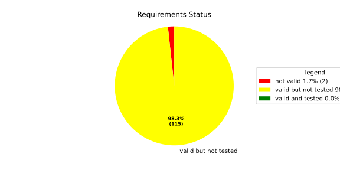
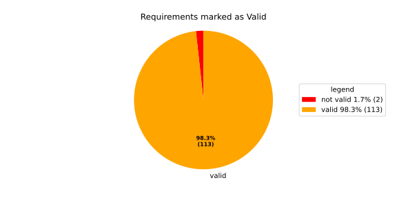
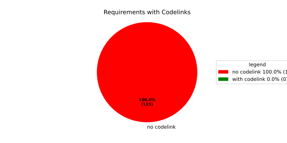

Component Requirements Statistics#
Overview#

In Detail#


No needs passed the filters
Failed Tests
Hint: This table should be empty. Before a PR can be merged all tests have to be successful.
No needs passed the filters
Skipped / Disabled Tests
No needs passed the filters
All passed Tests#
No needs passed the filters
Details About Testcases#
No needs passed the filters
No needs passed the filters
Test Log Files#
tests-report/score/health_monitor/src/rust/tests/test.log
exec ${PAGER:-/usr/bin/less} "$0" || exit 1
Executing tests from //score/health_monitor/src/rust:tests
-----------------------------------------------------------------------------
running 232 tests
test common::tests::duration_to_int_too_large - should panic ... ok
test common::tests::time_offset_diff_too_large - should panic ... ok
test common::tests::time_offset_valid ... ok
test common::tests::time_offset_wrong_order ... ok
test common::tests::time_range_from_interval_lower_too_large - should panic ... ok
test common::tests::time_range_from_interval_valid ... ok
test common::tests::time_range_new_valid ... ok
test common::tests::time_range_new_wrong_order - should panic ... ok
test deadline::common::tests::acquire_and_release_deadline ... ok
test deadline::common::tests::new_and_fields ... ok
test common::tests::duration_to_int_valid ... ok
test deadline::deadline_monitor::tests::deadline_failed_on_first_run_and_then_restarted_is_evaluated_as_error ... ok
test deadline::deadline_monitor::tests::deadline_outside_time_range_is_error_when_dropped_after_evaluate ... ok
test deadline::common::tests::concurrent_acquire ... ok
test deadline::deadline_monitor::tests::get_deadline_unknown_tag ... ok
test deadline::deadline_monitor::tests::start_stop_deadline_outside_ranges_is_evaluated_as_error ... ok
test deadline::deadline_monitor::tests::start_stop_deadline_outside_ranges_is_error_when_dropped_before_evaluate ... ok
test deadline::deadline_state::tests::as_u64_and_new ... ok
test deadline::deadline_state::tests::deadline_state_default_and_snapshot ... ok
test deadline::deadline_state::tests::deadline_state_update_none_returns_err ... ok
test deadline::deadline_state::tests::default_state ... ok
test deadline::deadline_state::tests::set_and_get_timestamp_ms ... ok
test deadline::deadline_state::tests::deadline_state_update_success ... ok
test deadline::deadline_state::tests::set_running ... ok
test deadline::deadline_state::tests::set_underrun ... ok
test deadline::ffi::tests::deadline_destroy_null_deadline ... ok
test deadline::ffi::tests::deadline_monitor_builder_add_deadline_invalid_range ... ok
test deadline::ffi::tests::deadline_monitor_builder_add_deadline_null_builder ... ok
test deadline::ffi::tests::deadline_monitor_builder_add_deadline_null_deadline_tag ... ok
test deadline::ffi::tests::deadline_monitor_builder_add_deadline_succeeds ... ok
test deadline::ffi::tests::deadline_monitor_builder_create_null_builder ... ok
test deadline::ffi::tests::deadline_monitor_builder_create_succeeds ... ok
test deadline::ffi::tests::deadline_monitor_builder_destroy_null_builder ... ok
test deadline::ffi::tests::deadline_monitor_destroy_null_monitor ... ok
test deadline::ffi::tests::deadline_monitor_get_deadline_null_deadline_handle ... ok
test deadline::ffi::tests::deadline_monitor_get_deadline_null_deadline_tag ... ok
test deadline::ffi::tests::deadline_monitor_get_deadline_null_monitor ... ok
test deadline::ffi::tests::deadline_monitor_get_deadline_unknown_deadline ... ok
test deadline::ffi::tests::deadline_monitor_get_deadline_succeeds ... ok
test deadline::ffi::tests::deadline_start_already_started ... ok
test deadline::ffi::tests::deadline_start_null_deadline ... ok
test deadline::ffi::tests::deadline_stop_null_deadline ... ok
test deadline::ffi::tests::deadline_start_succeeds ... ok
test deadline::ffi::tests::deadline_stop_succeeds ... ok
test ffi::tests::health_monitor_builder_add_deadline_monitor_null_deadline_monitor_builder ... ok
test ffi::tests::health_monitor_builder_add_deadline_monitor_null_hmon_builder ... ok
test ffi::tests::health_monitor_builder_add_deadline_monitor_null_monitor_tag ... ok
test ffi::tests::health_monitor_builder_add_deadline_monitor_succeeds ... ok
test ffi::tests::health_monitor_builder_add_heartbeat_monitor_null_hmon_builder ... ok
test ffi::tests::health_monitor_builder_add_heartbeat_monitor_null_heartbeat_monitor_builder ... ok
test ffi::tests::health_monitor_builder_add_heartbeat_monitor_null_monitor_tag ... ok
test ffi::tests::health_monitor_builder_add_heartbeat_monitor_succeeds ... ok
test ffi::tests::health_monitor_builder_add_logic_monitor_null_hmon_builder ... ok
test ffi::tests::health_monitor_builder_add_logic_monitor_null_logic_monitor_builder ... ok
test ffi::tests::health_monitor_builder_add_logic_monitor_null_monitor_tag ... ok
test ffi::tests::health_monitor_builder_add_logic_monitor_succeeds ... ok
test ffi::tests::health_monitor_builder_build_invalid_cycle_intervals ... ok
test ffi::tests::health_monitor_builder_build_no_monitors ... ok
test ffi::tests::health_monitor_builder_build_null_builder_handle ... ok
test ffi::tests::health_monitor_builder_build_null_monitor_handle ... ok
test ffi::tests::health_monitor_builder_build_succeeds ... ok
test ffi::tests::health_monitor_builder_build_thread_parameters ... ok
test ffi::tests::health_monitor_builder_build_valid_cycle_intervals_succeeds ... ok
test ffi::tests::health_monitor_builder_create_null_handle ... ok
test ffi::tests::health_monitor_builder_create_succeeds ... ok
test ffi::tests::health_monitor_builder_destroy_null_handle ... ok
test ffi::tests::health_monitor_destroy_null_hmon ... ok
test ffi::tests::health_monitor_get_deadline_monitor_already_taken ... ok
test ffi::tests::health_monitor_get_deadline_monitor_null_deadline_monitor ... ok
test ffi::tests::health_monitor_get_deadline_monitor_null_hmon ... ok
test ffi::tests::health_monitor_get_deadline_monitor_null_monitor_tag ... ok
test ffi::tests::health_monitor_get_deadline_monitor_succeeds ... ok
test ffi::tests::health_monitor_get_heartbeat_monitor_already_taken ... ok
test ffi::tests::health_monitor_get_heartbeat_monitor_null_heartbeat_monitor ... ok
test ffi::tests::health_monitor_get_heartbeat_monitor_null_monitor_tag ... ok
test ffi::tests::health_monitor_get_heartbeat_monitor_null_hmon ... ok
test ffi::tests::health_monitor_get_heartbeat_monitor_succeeds ... ok
test ffi::tests::health_monitor_get_logic_monitor_already_taken ... ok
test ffi::tests::health_monitor_get_logic_monitor_null_hmon ... ok
test ffi::tests::health_monitor_get_logic_monitor_null_logic_monitor ... ok
test ffi::tests::health_monitor_get_logic_monitor_null_monitor_tag ... ok
test ffi::tests::health_monitor_get_logic_monitor_succeeds ... ok
test ffi::tests::health_monitor_start_null_hmon ... ok
test ffi::tests::health_monitor_start_monitor_not_taken ... ok
test health_monitor::tests::health_monitor_builder_build_invalid_cycles ... ok
test health_monitor::tests::health_monitor_builder_build_no_monitors ... ok
test health_monitor::tests::health_monitor_builder_build_succeeds ... ok
test health_monitor::tests::health_monitor_builder_new_succeeds ... ok
test health_monitor::tests::health_monitor_get_deadline_monitor_available ... ok
test health_monitor::tests::health_monitor_get_deadline_monitor_invalid_state ... ok
test health_monitor::tests::health_monitor_get_deadline_monitor_taken ... ok
test health_monitor::tests::health_monitor_get_deadline_monitor_unknown ... ok
test health_monitor::tests::health_monitor_get_heartbeat_monitor_available ... ok
test health_monitor::tests::health_monitor_get_heartbeat_monitor_invalid_state ... ok
test health_monitor::tests::health_monitor_get_heartbeat_monitor_taken ... ok
test health_monitor::tests::health_monitor_get_heartbeat_monitor_unknown ... ok
test health_monitor::tests::health_monitor_get_logic_monitor_available ... ok
test health_monitor::tests::health_monitor_get_logic_monitor_invalid_state ... ok
[2026/06/01 13:07:08.7969051][7815][HMON][INFO] Monitoring thread started.
[2026/06/01 13:07:08.7969244][7815][HMON][INFO] Monitoring thread exiting.
test ffi::tests::health_monitor_start_succeeds ... ok
test health_monitor::tests::health_monitor_get_logic_monitor_taken ... ok
test health_monitor::tests::health_monitor_get_logic_monitor_unknown ... ok
[2026/06/01 13:07:08.7984349][7815][HMON][INFO] Monitoring thread started.
[2026/06/01 13:07:08.7984505][7815][HMON][INFO] Monitoring thread exiting.
test health_monitor::tests::health_monitor_start_monitors_not_taken - should panic ... ok
test health_monitor::tests::health_monitor_start_succeeds ... ok
test heartbeat::ffi::tests::heartbeat_monitor_builder_create_invalid_range ... ok
test heartbeat::ffi::tests::heartbeat_monitor_builder_create_null_builder ... ok
test heartbeat::ffi::tests::heartbeat_monitor_builder_create_succeeds ... ok
test heartbeat::ffi::tests::heartbeat_monitor_builder_destroy_null_builder ... ok
test heartbeat::ffi::tests::heartbeat_monitor_heartbeat_null_monitor ... ok
test heartbeat::ffi::tests::heartbeat_monitor_heartbeat_succeeds ... ok
test heartbeat::ffi::tests::heartbeat_monitor_destroy_null_monitor ... ok
test deadline::deadline_monitor::tests::monitor_with_multiple_running_deadlines ... ok
test heartbeat::heartbeat_monitor::tests::heartbeat_monitor_beat_early_evaluate_early ... ok
test heartbeat::heartbeat_monitor::tests::heartbeat_monitor_beat_early_evaluate_in_range ... ok
test heartbeat::heartbeat_monitor::tests::heartbeat_monitor_beat_in_range_evaluate_in_range ... ok
test heartbeat::heartbeat_monitor::tests::heartbeat_monitor_beat_early_evaluate_late ... ok
test heartbeat::heartbeat_monitor::tests::heartbeat_monitor_builder_build_invalid_internal_processing_cycle ... ok
test heartbeat::heartbeat_monitor::tests::heartbeat_monitor_builder_build_ok ... ok
test heartbeat::heartbeat_monitor::tests::heartbeat_monitor_beat_in_range_evaluate_late ... ok
test heartbeat::heartbeat_monitor::tests::heartbeat_monitor_beat_late_evaluate_late ... ok
test heartbeat::heartbeat_monitor::tests::heartbeat_monitor_cycle_early ... ok
test heartbeat::heartbeat_monitor::tests::heartbeat_monitor_multiple_beats_early_evaluate_early ... ok
test heartbeat::heartbeat_monitor::tests::heartbeat_monitor_cycle_in_range ... ok
test heartbeat::heartbeat_monitor::tests::heartbeat_monitor_multiple_beats_early_evaluate_in_range ... ok
test heartbeat::heartbeat_monitor::tests::heartbeat_monitor_multiple_beats_in_range_evaluate_in_range ... ok
test heartbeat::heartbeat_monitor::tests::heartbeat_monitor_cycle_late ... ok
test heartbeat::heartbeat_monitor::tests::heartbeat_monitor_multiple_beats_early_evaluate_late ... ok
test heartbeat::heartbeat_monitor::tests::heartbeat_monitor_no_beat_evaluate_early ... ok
test heartbeat::heartbeat_monitor::tests::heartbeat_monitor_no_beat_evaluate_in_range ... ok
test heartbeat::heartbeat_monitor::tests::heartbeat_monitor_multiple_beats_in_range_evaluate_late ... ok
test heartbeat::heartbeat_monitor::tests::heartbeat_monitor_multiple_beats_late_evaluate_late ... ok
test heartbeat::heartbeat_state::tests::snapshot_counter_increment ... ok
test heartbeat::heartbeat_state::tests::snapshot_default ... ok
test heartbeat::heartbeat_state::tests::snapshot_from_u64_max ... ok
test heartbeat::heartbeat_state::tests::snapshot_from_u64_valid ... ok
test heartbeat::heartbeat_state::tests::snapshot_from_u64_zero ... ok
test heartbeat::heartbeat_state::tests::snapshot_new_succeeds ... ok
test heartbeat::heartbeat_state::tests::snapshot_set_heartbeat_timestamp_out_of_range - should panic ... ok
test heartbeat::heartbeat_state::tests::snapshot_set_heartbeat_timestamp_valid ... ok
test heartbeat::heartbeat_state::tests::state_default ... ok
test heartbeat::heartbeat_state::tests::state_new ... ok
test heartbeat::heartbeat_state::tests::state_reset ... ok
test heartbeat::heartbeat_state::tests::state_snapshot ... ok
test heartbeat::heartbeat_state::tests::state_update_none ... ok
test heartbeat::heartbeat_state::tests::state_update_some ... ok
test logic::ffi::tests::logic_monitor_builder_add_state_null_allowed_states_many_elements ... ok
test logic::ffi::tests::logic_monitor_builder_add_state_null_allowed_states_zero_elements ... ok
test logic::ffi::tests::logic_monitor_builder_add_state_null_builder ... ok
test logic::ffi::tests::logic_monitor_builder_add_state_null_tag ... ok
test logic::ffi::tests::logic_monitor_builder_add_state_succeeds ... ok
test logic::ffi::tests::logic_monitor_builder_create_null_builder ... ok
test logic::ffi::tests::logic_monitor_builder_create_null_initial_state ... ok
test logic::ffi::tests::logic_monitor_builder_create_succeeds ... ok
test logic::ffi::tests::logic_monitor_builder_destroy_null_builder ... ok
test logic::ffi::tests::logic_monitor_destroy_null_monitor ... ok
test logic::ffi::tests::logic_monitor_state_fails ... ok
test logic::ffi::tests::logic_monitor_state_null_monitor ... ok
test logic::ffi::tests::logic_monitor_state_null_state ... ok
test logic::ffi::tests::logic_monitor_state_succeeds ... ok
test logic::ffi::tests::logic_monitor_transition_fails ... ok
test logic::ffi::tests::logic_monitor_transition_null_monitor ... ok
test logic::ffi::tests::logic_monitor_transition_null_target_state ... ok
test logic::ffi::tests::logic_monitor_transition_succeeds ... ok
test logic::logic_monitor::tests::logic_monitor_builder_build_no_states ... ok
test logic::logic_monitor::tests::logic_monitor_builder_build_succeeds ... ok
test logic::logic_monitor::tests::logic_monitor_builder_build_undefined_initial_state ... ok
test logic::logic_monitor::tests::logic_monitor_builder_build_undefined_target ... ok
test logic::logic_monitor::tests::logic_monitor_builder_new_succeeds ... ok
test logic::logic_monitor::tests::logic_monitor_evaluate_invalid_state ... ok
test logic::logic_monitor::tests::logic_monitor_evaluate_invalid_transition ... ok
test logic::logic_monitor::tests::logic_monitor_evaluate_succeeds ... ok
test logic::logic_monitor::tests::logic_monitor_state_indeterminate_current_state ... ok
test logic::logic_monitor::tests::logic_monitor_state_succeeds ... ok
test logic::logic_monitor::tests::logic_monitor_transition_indeterminate_current_state ... ok
test logic::logic_monitor::tests::logic_monitor_transition_invalid_transition ... ok
test logic::logic_monitor::tests::logic_monitor_transition_succeeds ... ok
test logic::logic_monitor::tests::logic_monitor_transition_unknown_node ... ok
test logic::logic_state::tests::snapshot_from_u64_max ... ok
test logic::logic_state::tests::snapshot_from_u64_valid ... ok
test logic::logic_state::tests::snapshot_from_u64_zero ... ok
test logic::logic_state::tests::snapshot_new_succeeds ... ok
test logic::logic_state::tests::snapshot_set_current_state_index_valid ... ok
test logic::logic_state::tests::snapshot_set_heartbeat_timestamp_out_of_range - should panic ... ok
test logic::logic_state::tests::snapshot_set_monitor_status_valid ... ok
test logic::logic_state::tests::state_new ... ok
test logic::logic_state::tests::state_snapshot ... ok
test logic::logic_state::tests::state_swap ... ok
test tag::tests::deadline_tag_debug ... ok
test tag::tests::deadline_tag_from_str ... ok
test tag::tests::deadline_tag_from_string ... ok
test tag::tests::deadline_tag_new ... ok
test tag::tests::deadline_tag_score_debug ... ok
test tag::tests::monitor_tag_debug ... ok
test tag::tests::monitor_tag_from_str ... ok
test tag::tests::monitor_tag_from_string ... ok
test tag::tests::monitor_tag_new ... ok
test tag::tests::monitor_tag_score_debug ... ok
test tag::tests::state_tag_debug ... ok
test tag::tests::state_tag_from_str ... ok
test tag::tests::state_tag_from_string ... ok
test tag::tests::state_tag_new ... ok
test tag::tests::state_tag_score_debug ... ok
test tag::tests::tag_debug ... ok
test tag::tests::tag_hash_is_eq ... ok
test tag::tests::tag_hash_is_ne ... ok
test tag::tests::tag_new ... ok
test tag::tests::tag_partial_eq_is_eq ... ok
test tag::tests::tag_partial_eq_is_ne ... ok
test tag::tests::tag_score_debug ... ok
test tag::tests::test_from_str ... ok
test tag::tests::test_from_string ... ok
test thread_ffi::tests::scheduler_policy_priority_max_null_priority ... ok
test thread_ffi::tests::scheduler_policy_priority_max_succeeds ... ok
test thread_ffi::tests::scheduler_policy_priority_min_null_priority ... ok
test thread_ffi::tests::scheduler_policy_priority_min_succeeds ... ok
test thread_ffi::tests::thread_parameters_affinity_null_affinity_many_elements ... ok
test thread_ffi::tests::thread_parameters_affinity_null_affinity_zero_elements ... ok
test thread_ffi::tests::thread_parameters_affinity_null_handle ... ok
test thread_ffi::tests::thread_parameters_affinity_succeeds ... ok
test thread_ffi::tests::thread_parameters_create_succeeds ... ok
test thread_ffi::tests::thread_parameters_destroy_null_handle ... ok
test thread_ffi::tests::thread_parameters_scheduler_parameters_invalid_priority ... ok
test thread_ffi::tests::thread_parameters_scheduler_parameters_null_handle ... ok
test thread_ffi::tests::thread_parameters_scheduler_parameters_succeeds ... ok
test thread_ffi::tests::thread_parameters_stack_size_null_handle ... ok
test thread_ffi::tests::thread_parameters_stack_size_succeeds ... ok
test worker::tests::monitoring_logic_report_alive_on_each_call_when_no_error ... ok
test heartbeat::heartbeat_monitor::tests::heartbeat_monitor_no_beat_evaluate_late ... ok
test worker::tests::monitoring_logic_report_error_when_deadline_failed ... ok
[2026/06/01 13:07:09.7562980][7815][HMON][INFO] Monitoring thread started.
test deadline::deadline_monitor::tests::start_stop_deadline_within_range_works ... ok
[2026/06/01 13:07:09.8167115][7815][HMON][WARN] Deadline (DeadlineTag(deadline_fast)) missed! Expected: 50, now: 60
[2026/06/01 13:07:09.8167394][7815][HMON][WARN] Deadline monitor with tag MonitorTag(deadline_monitor) reported error: TooLate.
[2026/06/01 13:07:09.8167466][7815][HMON][WARN] One or more monitors reported errors, skipping AliveAPI notification.
[2026/06/01 13:07:09.8167535][7815][HMON][INFO] Monitoring logic failed, stopping thread.
[2026/06/01 13:07:09.8167586][7815][HMON][INFO] Monitoring thread exiting.
test worker::tests::monitoring_logic_report_alive_respect_cycle ... ok
test worker::tests::unique_thread_runner_monitoring_works ... ok
test heartbeat::heartbeat_monitor::tests::heartbeat_monitor_timestamp_offset ... ok
test result: ok. 232 passed; 0 failed; 0 ignored; 0 measured; 0 filtered out; finished in 1.27s
tests-report/score/health_monitor/src/rust/loom_tests/test.log
exec ${PAGER:-/usr/bin/less} "$0" || exit 1
Executing tests from //score/health_monitor/src/rust:loom_tests
-----------------------------------------------------------------------------
running 3 tests
test heartbeat::heartbeat_monitor::loom_tests::heartbeat_monitor_heartbeat_evaluate_too_early ... ok
test heartbeat::heartbeat_monitor::loom_tests::heartbeat_monitor_heartbeat_evaluate_in_range ... ok
test heartbeat::heartbeat_monitor::loom_tests::heartbeat_monitor_heartbeat_evaluate_too_late ... ok
test result: ok. 3 passed; 0 failed; 0 ignored; 0 measured; 0 filtered out; finished in 0.71s
tests-report/score/health_monitor/src/cpp/cpp_tests/test.log
exec ${PAGER:-/usr/bin/less} "$0" || exit 1
Executing tests from //score/health_monitor/src/cpp:cpp_tests
-----------------------------------------------------------------------------
Running main() from gmock_main.cc
[==========] Running 1 test from 1 test suite.
[----------] Global test environment set-up.
[----------] 1 test from HealthMonitorTest
[ RUN ] HealthMonitorTest.TestName
[2026/06/01 13:07:10.0989262][score/health_monitor/src/rust/worker.rs:121][8244][HMON][INFO] Monitoring thread started.
[2026/06/01 13:07:10.0990149][score/health_monitor/src/rust/deadline/deadline_monitor.rs:217][8244][HMON][ERROR] Deadline DeadlineTag(deadline_1) stopped too early by 100 ms
[2026/06/01 13:07:10.1497675][score/health_monitor/src/rust/deadline/deadline_monitor.rs:267][8244][HMON][WARN] Deadline (DeadlineTag(deadline_1)) finished too early!
[2026/06/01 13:07:10.1497986][score/health_monitor/src/rust/worker.rs:58][8244][HMON][WARN] Deadline monitor with tag MonitorTag(deadline_monitor) reported error: TooEarly.
[2026/06/01 13:07:10.1498095][score/health_monitor/src/rust/heartbeat/heartbeat_monitor.rs:253][8244][HMON][WARN] Heartbeat occurred too early, offset to range: 100
[2026/06/01 13:07:10.1498145][score/health_monitor/src/rust/worker.rs:64][8244][HMON][WARN] Heartbeat monitor with tag MonitorTag(heartbeat_monitor) reported error: TooEarly.
[2026/06/01 13:07:10.1498203][score/health_monitor/src/rust/worker.rs:85][8244][HMON][WARN] One or more monitors reported errors, skipping AliveAPI notification.
[2026/06/01 13:07:10.1498247][score/health_monitor/src/rust/worker.rs:132][8244][HMON][INFO] Monitoring logic failed, stopping thread.
[2026/06/01 13:07:10.1498288][score/health_monitor/src/rust/worker.rs:139][8244][HMON][INFO] Monitoring thread exiting.
[ OK ] HealthMonitorTest.TestName (51 ms)
[----------] 1 test from HealthMonitorTest (51 ms total)
[----------] Global test environment tear-down
[==========] 1 test from 1 test suite ran. (51 ms total)
[ PASSED ] 1 test.
tests-report/score/launch_manager/daemon/src/process_state_client/process_state_client_ut/test.log
exec ${PAGER:-/usr/bin/less} "$0" || exit 1
Executing tests from //score/launch_manager/daemon/src/process_state_client:process_state_client_ut
-----------------------------------------------------------------------------
Running main() from gmock_main.cc
[==========] Running 4 tests from 1 test suite.
[----------] Global test environment set-up.
[----------] 4 tests from ProcessStateClient_UT
[ RUN ] ProcessStateClient_UT.ProcessStateClient_ConstructReceiver_Succeeds
[ OK ] ProcessStateClient_UT.ProcessStateClient_ConstructReceiver_Succeeds (0 ms)
[ RUN ] ProcessStateClient_UT.ProcessStateClient_QueueOneProcess_Succeeds
[ OK ] ProcessStateClient_UT.ProcessStateClient_QueueOneProcess_Succeeds (0 ms)
[ RUN ] ProcessStateClient_UT.ProcessStateClient_QueueMaxNumberOfProcesses_Succeeds
[ OK ] ProcessStateClient_UT.ProcessStateClient_QueueMaxNumberOfProcesses_Succeeds (8 ms)
[ RUN ] ProcessStateClient_UT.ProcessStateClient_QueueOneProcessTooMany_Fails
mw::log initialization error: Error No logging configuration files could be found. occurred with context information: Failed to load configuration files. Fallback to console logging.
2026/06/01 13:07:07.9227519 1538361 000 ECU1 NONE LM log error verbose 1 Failed to queue posix process
2026/06/01 13:07:07.9227520 1538363 000 ECU1 NONE LM log error verbose 1 ProcessStateReceiver::getNextChangedPosixProcess: Overflow occurred, will be reported as kCommunicationError
[ OK ] ProcessStateClient_UT.ProcessStateClient_QueueOneProcessTooMany_Fails (5 ms)
[----------] 4 tests from ProcessStateClient_UT (15 ms total)
[----------] Global test environment tear-down
[==========] 4 tests from 1 test suite ran. (15 ms total)
[ PASSED ] 4 tests.
tests-report/score/launch_manager/daemon/src/recovery_client/recovery_client_UT/test.log
exec ${PAGER:-/usr/bin/less} "$0" || exit 1
Executing tests from //score/launch_manager/daemon/src/recovery_client:recovery_client_UT
-----------------------------------------------------------------------------
Running main() from gmock_main.cc
[==========] Running 5 tests from 1 test suite.
[----------] Global test environment set-up.
[----------] 5 tests from RecoveryClientTest
[ RUN ] RecoveryClientTest.SendSingleRequest
[ OK ] RecoveryClientTest.SendSingleRequest (0 ms)
[ RUN ] RecoveryClientTest.GetNextRequest
[ OK ] RecoveryClientTest.GetNextRequest (0 ms)
[ RUN ] RecoveryClientTest.GetNextRequestEmpty
[ OK ] RecoveryClientTest.GetNextRequestEmpty (0 ms)
[ RUN ] RecoveryClientTest.RingBufferFull
[ OK ] RecoveryClientTest.RingBufferFull (0 ms)
[ RUN ] RecoveryClientTest.FIFOOrdering
[ OK ] RecoveryClientTest.FIFOOrdering (0 ms)
[----------] 5 tests from RecoveryClientTest (0 ms total)
[----------] Global test environment tear-down
[==========] 5 tests from 1 test suite ran. (0 ms total)
[ PASSED ] 5 tests.
tests-report/score/launch_manager/daemon/src/alive_monitor/details/recovery/Notification_UT/test.log
exec ${PAGER:-/usr/bin/less} "$0" || exit 1
Executing tests from //score/launch_manager/daemon/src/alive_monitor/details/recovery:Notification_UT
-----------------------------------------------------------------------------
Running main() from gmock_main.cc
[==========] Running 5 tests from 2 test suites.
[----------] Global test environment set-up.
[----------] 4 tests from NotificationWithConfigTest
[ RUN ] NotificationWithConfigTest.CanGetNotificationName
mw::log initialization error: Error No logging configuration files could be found. occurred with context information: Failed to load configuration files. Fallback to console logging.
[ OK ] NotificationWithConfigTest.CanGetNotificationName (3 ms)
[ RUN ] NotificationWithConfigTest.SendsRequestAndNeverTimesOut
[ OK ] NotificationWithConfigTest.SendsRequestAndNeverTimesOut (0 ms)
[ RUN ] NotificationWithConfigTest.TimesOutWhenSendingRequestFails
2026/06/01 13:07:07.9227947 1542634 000 ECU1 NONE Rcvy log error verbose 2 Notification (TestNotification) Failed to enqueue recovery request (ring buffer full)
[ OK ] NotificationWithConfigTest.TimesOutWhenSendingRequestFails (1 ms)
[ RUN ] NotificationWithConfigTest.ProxyInitializationFails
2026/06/01 13:07:07.9227947 1542641 000 ECU1 NONE Rcvy log error verbose 3 Notification (TestNotification) Invalid ProcessGroupState identifier: InvalidIdentifier
[ OK ] NotificationWithConfigTest.ProxyInitializationFails (0 ms)
[----------] 4 tests from NotificationWithConfigTest (6 ms total)
[----------] 1 test from NotificationWithoutConfigTest
[ RUN ] NotificationWithoutConfigTest.WatchdogNotificationGoesDirectlyToTimeout
[ OK ] NotificationWithoutConfigTest.WatchdogNotificationGoesDirectlyToTimeout (1 ms)
[----------] 1 test from NotificationWithoutConfigTest (2 ms total)
[----------] Global test environment tear-down
[==========] 5 tests from 2 test suites ran. (10 ms total)
[ PASSED ] 5 tests.
tests-report/score/launch_manager/daemon/src/common/identifier_hash_UT/test.log
exec ${PAGER:-/usr/bin/less} "$0" || exit 1
Executing tests from //score/launch_manager/daemon/src/common:identifier_hash_UT
-----------------------------------------------------------------------------
Running main() from gmock_main.cc
[==========] Running 7 tests from 1 test suite.
[----------] Global test environment set-up.
[----------] 7 tests from IdentifierHashTest
[ RUN ] IdentifierHashTest.IdentifierHash_with_string_view_created
[ OK ] IdentifierHashTest.IdentifierHash_with_string_view_created (0 ms)
[ RUN ] IdentifierHashTest.IdentifierHash_with_string_created
[ OK ] IdentifierHashTest.IdentifierHash_with_string_created (0 ms)
[ RUN ] IdentifierHashTest.IdentifierHash_default_created
[ OK ] IdentifierHashTest.IdentifierHash_default_created (0 ms)
[ RUN ] IdentifierHashTest.IdentifierHash_invalid_hash_no_string_representation
[ OK ] IdentifierHashTest.IdentifierHash_invalid_hash_no_string_representation (0 ms)
[ RUN ] IdentifierHashTest.IdentifierHash_no_dangling_pointer_after_source_string_dies
[ OK ] IdentifierHashTest.IdentifierHash_no_dangling_pointer_after_source_string_dies (0 ms)
[ RUN ] IdentifierHashTest.IdentifierHash_EqualityOperators
[ OK ] IdentifierHashTest.IdentifierHash_EqualityOperators (0 ms)
[ RUN ] IdentifierHashTest.IdentifierHash_LessThanOperator
[ OK ] IdentifierHashTest.IdentifierHash_LessThanOperator (0 ms)
[----------] 7 tests from IdentifierHashTest (0 ms total)
[----------] Global test environment tear-down
[==========] 7 tests from 1 test suite ran. (0 ms total)
[ PASSED ] 7 tests.
tests-report/score/launch_manager/daemon/src/common/concurrency/mpmc_concurrent_queue_tsan_test/test.log
exec ${PAGER:-/usr/bin/less} "$0" || exit 1
Executing tests from //score/launch_manager/daemon/src/common/concurrency:mpmc_concurrent_queue_tsan_test
-----------------------------------------------------------------------------
Running main() from gmock_main.cc
[==========] Running 15 tests from 5 test suites.
[----------] Global test environment set-up.
[----------] 5 tests from MPMCConcurrentQueueTest_Basic
[ RUN ] MPMCConcurrentQueueTest_Basic.PushAndPopSingleItem
[ OK ] MPMCConcurrentQueueTest_Basic.PushAndPopSingleItem (0 ms)
[ RUN ] MPMCConcurrentQueueTest_Basic.PushAndPopPreservesOrder
[ OK ] MPMCConcurrentQueueTest_Basic.PushAndPopPreservesOrder (0 ms)
[ RUN ] MPMCConcurrentQueueTest_Basic.LvaluePushCopiesItem
[ OK ] MPMCConcurrentQueueTest_Basic.LvaluePushCopiesItem (0 ms)
[ RUN ] MPMCConcurrentQueueTest_Basic.RvaluePushWorksWithMoveOnlyType
[ OK ] MPMCConcurrentQueueTest_Basic.RvaluePushWorksWithMoveOnlyType (0 ms)
[ RUN ] MPMCConcurrentQueueTest_Basic.PopReturnsNulloptOnSemaphoreWaitFailure
[ OK ] MPMCConcurrentQueueTest_Basic.PopReturnsNulloptOnSemaphoreWaitFailure (20 ms)
[----------] 5 tests from MPMCConcurrentQueueTest_Basic (21 ms total)
[----------] 2 tests from MPMCConcurrentQueueTest_Timeout
[ RUN ] MPMCConcurrentQueueTest_Timeout.PushWithTimeoutSucceedsWhenSlotAvailable
[ OK ] MPMCConcurrentQueueTest_Timeout.PushWithTimeoutSucceedsWhenSlotAvailable (0 ms)
[ RUN ] MPMCConcurrentQueueTest_Timeout.PushWithTimeoutReturnsFalseWhenFull
[ OK ] MPMCConcurrentQueueTest_Timeout.PushWithTimeoutReturnsFalseWhenFull (20 ms)
[----------] 2 tests from MPMCConcurrentQueueTest_Timeout (20 ms total)
[----------] 3 tests from MPMCConcurrentQueueTest_Stop
[ RUN ] MPMCConcurrentQueueTest_Stop.PushReturnsFalseAfterStop
[ OK ] MPMCConcurrentQueueTest_Stop.PushReturnsFalseAfterStop (0 ms)
[ RUN ] MPMCConcurrentQueueTest_Stop.PopReturnsNulloptWhenStoppedAndEmpty
[ OK ] MPMCConcurrentQueueTest_Stop.PopReturnsNulloptWhenStoppedAndEmpty (0 ms)
[ RUN ] MPMCConcurrentQueueTest_Stop.ItemsAreDroppedAfterStop
[ OK ] MPMCConcurrentQueueTest_Stop.ItemsAreDroppedAfterStop (0 ms)
[----------] 3 tests from MPMCConcurrentQueueTest_Stop (0 ms total)
[----------] 4 tests from MPMCConcurrentQueueTest_Blocking
[ RUN ] MPMCConcurrentQueueTest_Blocking.PopBlocksUntilItemAvailable
[ OK ] MPMCConcurrentQueueTest_Blocking.PopBlocksUntilItemAvailable (0 ms)
[ RUN ] MPMCConcurrentQueueTest_Blocking.PushBlocksWhenFull
[ OK ] MPMCConcurrentQueueTest_Blocking.PushBlocksWhenFull (0 ms)
[ RUN ] MPMCConcurrentQueueTest_Blocking.StopUnblocksBlockedConsumer
[ OK ] MPMCConcurrentQueueTest_Blocking.StopUnblocksBlockedConsumer (0 ms)
[ RUN ] MPMCConcurrentQueueTest_Blocking.StopUnblocksBlockedProducer
[ OK ] MPMCConcurrentQueueTest_Blocking.StopUnblocksBlockedProducer (0 ms)
[----------] 4 tests from MPMCConcurrentQueueTest_Blocking (0 ms total)
[----------] 1 test from MPMCConcurrentQueueTest_MPMC
[ RUN ] MPMCConcurrentQueueTest_MPMC.AllItemsDelivered
[ OK ] MPMCConcurrentQueueTest_MPMC.AllItemsDelivered (1 ms)
[----------] 1 test from MPMCConcurrentQueueTest_MPMC (1 ms total)
[----------] Global test environment tear-down
[==========] 15 tests from 5 test suites ran. (45 ms total)
[ PASSED ] 15 tests.
tests-report/score/launch_manager/daemon/src/common/concurrency/mpmc_concurrent_queue_test/test.log
exec ${PAGER:-/usr/bin/less} "$0" || exit 1
Executing tests from //score/launch_manager/daemon/src/common/concurrency:mpmc_concurrent_queue_test
-----------------------------------------------------------------------------
Running main() from gmock_main.cc
[==========] Running 15 tests from 5 test suites.
[----------] Global test environment set-up.
[----------] 5 tests from MPMCConcurrentQueueTest_Basic
[ RUN ] MPMCConcurrentQueueTest_Basic.PushAndPopSingleItem
[ OK ] MPMCConcurrentQueueTest_Basic.PushAndPopSingleItem (0 ms)
[ RUN ] MPMCConcurrentQueueTest_Basic.PushAndPopPreservesOrder
[ OK ] MPMCConcurrentQueueTest_Basic.PushAndPopPreservesOrder (0 ms)
[ RUN ] MPMCConcurrentQueueTest_Basic.LvaluePushCopiesItem
[ OK ] MPMCConcurrentQueueTest_Basic.LvaluePushCopiesItem (0 ms)
[ RUN ] MPMCConcurrentQueueTest_Basic.RvaluePushWorksWithMoveOnlyType
[ OK ] MPMCConcurrentQueueTest_Basic.RvaluePushWorksWithMoveOnlyType (0 ms)
[ RUN ] MPMCConcurrentQueueTest_Basic.PopReturnsNulloptOnSemaphoreWaitFailure
[ OK ] MPMCConcurrentQueueTest_Basic.PopReturnsNulloptOnSemaphoreWaitFailure (20 ms)
[----------] 5 tests from MPMCConcurrentQueueTest_Basic (20 ms total)
[----------] 2 tests from MPMCConcurrentQueueTest_Timeout
[ RUN ] MPMCConcurrentQueueTest_Timeout.PushWithTimeoutSucceedsWhenSlotAvailable
[ OK ] MPMCConcurrentQueueTest_Timeout.PushWithTimeoutSucceedsWhenSlotAvailable (0 ms)
[ RUN ] MPMCConcurrentQueueTest_Timeout.PushWithTimeoutReturnsFalseWhenFull
[ OK ] MPMCConcurrentQueueTest_Timeout.PushWithTimeoutReturnsFalseWhenFull (20 ms)
[----------] 2 tests from MPMCConcurrentQueueTest_Timeout (20 ms total)
[----------] 3 tests from MPMCConcurrentQueueTest_Stop
[ RUN ] MPMCConcurrentQueueTest_Stop.PushReturnsFalseAfterStop
[ OK ] MPMCConcurrentQueueTest_Stop.PushReturnsFalseAfterStop (0 ms)
[ RUN ] MPMCConcurrentQueueTest_Stop.PopReturnsNulloptWhenStoppedAndEmpty
[ OK ] MPMCConcurrentQueueTest_Stop.PopReturnsNulloptWhenStoppedAndEmpty (0 ms)
[ RUN ] MPMCConcurrentQueueTest_Stop.ItemsAreDroppedAfterStop
[ OK ] MPMCConcurrentQueueTest_Stop.ItemsAreDroppedAfterStop (0 ms)
[----------] 3 tests from MPMCConcurrentQueueTest_Stop (0 ms total)
[----------] 4 tests from MPMCConcurrentQueueTest_Blocking
[ RUN ] MPMCConcurrentQueueTest_Blocking.PopBlocksUntilItemAvailable
[ OK ] MPMCConcurrentQueueTest_Blocking.PopBlocksUntilItemAvailable (0 ms)
[ RUN ] MPMCConcurrentQueueTest_Blocking.PushBlocksWhenFull
[ OK ] MPMCConcurrentQueueTest_Blocking.PushBlocksWhenFull (0 ms)
[ RUN ] MPMCConcurrentQueueTest_Blocking.StopUnblocksBlockedConsumer
[ OK ] MPMCConcurrentQueueTest_Blocking.StopUnblocksBlockedConsumer (0 ms)
[ RUN ] MPMCConcurrentQueueTest_Blocking.StopUnblocksBlockedProducer
[ OK ] MPMCConcurrentQueueTest_Blocking.StopUnblocksBlockedProducer (0 ms)
[----------] 4 tests from MPMCConcurrentQueueTest_Blocking (0 ms total)
[----------] 1 test from MPMCConcurrentQueueTest_MPMC
[ RUN ] MPMCConcurrentQueueTest_MPMC.AllItemsDelivered
[ OK ] MPMCConcurrentQueueTest_MPMC.AllItemsDelivered (0 ms)
[----------] 1 test from MPMCConcurrentQueueTest_MPMC (0 ms total)
[----------] Global test environment tear-down
[==========] 15 tests from 5 test suites ran. (42 ms total)
[ PASSED ] 15 tests.
tests-report/tests/integration/smoke/smoke/test.log
exec ${PAGER:-/usr/bin/less} "$0" || exit 1
Executing tests from //tests/integration/smoke:smoke
-----------------------------------------------------------------------------
============================= test session starts ==============================
platform linux -- Python 3.12.12, pytest-9.0.3, pluggy-1.5.0
rootdir: /home/runner/.bazel/sandbox/processwrapper-sandbox/870/execroot/_main/bazel-out/k8-fastbuild/bin/tests/integration/smoke/smoke.runfiles/score_itf+
configfile: pytest.ini
collected 1 item
../score_itf+::test_smoke
-------------------------------- live log setup --------------------------------
[2026-06-02 14:15:08.799] [INFO] [score.itf.plugins.docker] Executing custom image bootstrap command: tests/utils/environments/x86_64-linux/x86_64-linux.sh
[2026-06-02 14:15:12.299] [DEBUG] [docker.utils.config] Trying paths: ['/home/runner/.docker/config.json', '/home/runner/.dockercfg']
[2026-06-02 14:15:12.300] [DEBUG] [docker.utils.config] Found file at path: /home/runner/.docker/config.json
[2026-06-02 14:15:12.300] [DEBUG] [docker.auth] Found 'auths' section
[2026-06-02 14:15:12.300] [DEBUG] [docker.auth] Found entry (registry='https://index.docker.io/v1/', username='githubactions')
[2026-06-02 14:15:12.319] [DEBUG] [urllib3.connectionpool] http://localhost:None "GET /version HTTP/1.1" 200 823
[2026-06-02 14:15:13.439] [DEBUG] [urllib3.connectionpool] http://localhost:None "POST /v1.48/containers/create HTTP/1.1" 201 88
[2026-06-02 14:15:13.441] [DEBUG] [urllib3.connectionpool] http://localhost:None "GET /v1.48/containers/16c316ec6cf3fb8d51577c619d88ef4b0745c5526a2ea09660ab35d2e54aadb1/json HTTP/1.1" 200 None
[2026-06-02 14:15:13.694] [DEBUG] [urllib3.connectionpool] http://localhost:None "POST /v1.48/containers/16c316ec6cf3fb8d51577c619d88ef4b0745c5526a2ea09660ab35d2e54aadb1/start HTTP/1.1" 204 0
[2026-06-02 14:15:13.695] [DEBUG] [docker.utils.config] Trying paths: ['/home/runner/.docker/config.json', '/home/runner/.dockercfg']
[2026-06-02 14:15:13.695] [DEBUG] [docker.utils.config] Found file at path: /home/runner/.docker/config.json
[2026-06-02 14:15:13.695] [DEBUG] [docker.auth] Found 'auths' section
[2026-06-02 14:15:13.695] [DEBUG] [docker.auth] Found entry (registry='https://index.docker.io/v1/', username='githubactions')
[2026-06-02 14:15:13.705] [DEBUG] [urllib3.connectionpool] http://localhost:None "GET /version HTTP/1.1" 200 823
[2026-06-02 14:15:13.707] [DEBUG] [urllib3.connectionpool] http://localhost:None "POST /v1.48/containers/16c316ec6cf3fb8d51577c619d88ef4b0745c5526a2ea09660ab35d2e54aadb1/exec HTTP/1.1" 201 74
[2026-06-02 14:15:13.711] [DEBUG] [urllib3.connectionpool] http://localhost:None "POST /v1.48/exec/f4ced25f0def5b91d7ff2c459e1e145fcdb8853ba1514e19d7a5fb6094771c69/start HTTP/1.1" 101 0
[2026-06-02 14:15:13.768] [DEBUG] [urllib3.connectionpool] http://localhost:None "GET /v1.48/exec/f4ced25f0def5b91d7ff2c459e1e145fcdb8853ba1514e19d7a5fb6094771c69/json HTTP/1.1" 200 390
[2026-06-02 14:15:13.827] [DEBUG] [urllib3.connectionpool] http://localhost:None "PUT /v1.48/containers/16c316ec6cf3fb8d51577c619d88ef4b0745c5526a2ea09660ab35d2e54aadb1/archive?path=%2Ftmp HTTP/1.1" 200 0
[2026-06-02 14:15:13.830] [DEBUG] [urllib3.connectionpool] http://localhost:None "POST /v1.48/containers/16c316ec6cf3fb8d51577c619d88ef4b0745c5526a2ea09660ab35d2e54aadb1/exec HTTP/1.1" 201 74
[2026-06-02 14:15:13.834] [DEBUG] [urllib3.connectionpool] http://localhost:None "POST /v1.48/exec/605050327f544c1b6ee62f0d8eaf1e5adfe03f07f21429b3aca768df0a05a36b/start HTTP/1.1" 101 0
[2026-06-02 14:15:13.935] [DEBUG] [urllib3.connectionpool] http://localhost:None "GET /v1.48/exec/605050327f544c1b6ee62f0d8eaf1e5adfe03f07f21429b3aca768df0a05a36b/json HTTP/1.1" 200 416
[2026-06-02 14:15:13.936] [INFO] [tests.utils.testing_utils.setup_test] Test case setup finished
-------------------------------- live log call ---------------------------------
[2026-06-02 14:15:13.944] [DEBUG] [urllib3.connectionpool] http://localhost:None "POST /v1.48/containers/16c316ec6cf3fb8d51577c619d88ef4b0745c5526a2ea09660ab35d2e54aadb1/exec HTTP/1.1" 201 74
[2026-06-02 14:15:13.948] [DEBUG] [urllib3.connectionpool] http://localhost:None "POST /v1.48/exec/51d46be7f9f5664482615c7d6a658f248e347defad6e806cc5c2f9b534ad7731/start HTTP/1.1" 101 0
[2026-06-02 14:15:14.011] [DEBUG] [urllib3.connectionpool] http://localhost:None "GET /v1.48/exec/51d46be7f9f5664482615c7d6a658f248e347defad6e806cc5c2f9b534ad7731/json HTTP/1.1" 200 404
[2026-06-02 14:15:14.017] [DEBUG] [urllib3.connectionpool] http://localhost:None "POST /v1.48/containers/16c316ec6cf3fb8d51577c619d88ef4b0745c5526a2ea09660ab35d2e54aadb1/exec HTTP/1.1" 201 74
[2026-06-02 14:15:14.022] [DEBUG] [urllib3.connectionpool] http://localhost:None "POST /v1.48/exec/2236f70e35c36a60e1032f432031076ab59b8e8c3c93de4a9492a63a5019c1ca/start HTTP/1.1" 101 0
[2026-06-02 14:15:14.076] [INFO] [launch_manager] mw::log initialization error: Error No logging configuration files could be found. occurred with context information: Failed to load configuration files. Fallback to console logging.
[2026-06-02 14:15:14.080] [INFO] [launch_manager] 2026/06/02 14:15:14.9714077 2593703 000 ECU1 NONE Fcty log warn verbose 2 Factory for FlatCfg MachineConfig: No watchdog configured
[2026-06-02 14:15:14.080] [DEBUG] [urllib3.connectionpool] http://localhost:None "GET /v1.48/exec/2236f70e35c36a60e1032f432031076ab59b8e8c3c93de4a9492a63a5019c1ca/json HTTP/1.1" 200 442
[2026-06-02 14:15:14.082] [INFO] [launch_manager] [==========] Running 1 test from 1 test suite.
[2026-06-02 14:15:14.082] [INFO] [launch_manager] [----------] Global test environment set-up.
[2026-06-02 14:15:14.082] [INFO] [launch_manager] [----------] 1 test from Smoke
[2026-06-02 14:15:14.083] [INFO] [launch_manager] [ RUN ] Smoke.Daemon
[2026-06-02 14:15:14.084] [DEBUG] [urllib3.connectionpool] http://localhost:None "POST /v1.48/containers/16c316ec6cf3fb8d51577c619d88ef4b0745c5526a2ea09660ab35d2e54aadb1/exec HTTP/1.1" 201 74
[2026-06-02 14:15:14.086] [INFO] [launch_manager] [ STEP ] Control daemon report kRunning
[2026-06-02 14:15:14.087] [INFO] [launch_manager] [ END STEP ] Control daemon report kRunning
[2026-06-02 14:15:14.087] [INFO] [launch_manager] [ STEP ] Activate RunTarget Running
[2026-06-02 14:15:14.087] [INFO] [launch_manager] mw::log
[2026-06-02 14:15:14.087] [INFO] [launch_manager] initialization error:
[2026-06-02 14:15:14.087] [INFO] [launch_manager] Error No logging configuration files could be found. occurred with context information: Failed to load configuration files. Fallback to console logging.
[2026-06-02 14:15:14.088] [DEBUG] [urllib3.connectionpool] http://localhost:None "POST /v1.48/exec/29cc272e28600c058a6e8f4c16544cfd7f330c08d557c3a92904d6a220a4490b/start HTTP/1.1" 101 0
[2026-06-02 14:15:14.089] [INFO] [launch_manager] [==========] Running 1 test from 1 test suite.
[2026-06-02 14:15:14.090] [INFO] [launch_manager] [----------] Global test environment set-up.
[2026-06-02 14:15:14.090] [INFO] [launch_manager] [----------] 1 test from Smoke
[2026-06-02 14:15:14.090] [INFO] [launch_manager] [ RUN ] Smoke.Process
[2026-06-02 14:15:14.091] [INFO] [launch_manager] [ OK ] Smoke.Process (2 ms)
[2026-06-02 14:15:14.091] [INFO] [launch_manager] [----------] 1 test from Smoke (2 ms total)
[2026-06-02 14:15:14.091] [INFO] [launch_manager] [----------] Global test environment tear-down
[2026-06-02 14:15:14.091] [INFO] [launch_manager] [==========] 1 test from 1 test suite ran. (2 ms total)
[2026-06-02 14:15:14.091] [INFO] [launch_manager] [ PASSED ] 1 test.
[2026-06-02 14:15:14.165] [DEBUG] [urllib3.connectionpool] http://localhost:None "GET /v1.48/exec/29cc272e28600c058a6e8f4c16544cfd7f330c08d557c3a92904d6a220a4490b/json HTTP/1.1" 200 404
[2026-06-02 14:15:14.165] [DEBUG] [tests.utils.testing_utils.run_until_file_deployed] Waiting for /tmp/tests/test_end
[2026-06-02 14:15:14.182] [INFO] [launch_manager] [ END STEP ] Activate RunTarget Running
[2026-06-02 14:15:14.182] [INFO] [launch_manager] [ STEP ] Activate RunTarget Startup
[2026-06-02 14:15:14.282] [INFO] [launch_manager] [ END STEP ] Activate RunTarget Startup
[2026-06-02 14:15:14.282] [INFO] [launch_manager] [ STEP ] Activate RunTarget Off
[2026-06-02 14:15:14.284] [INFO] [launch_manager] [ END STEP ] Activate RunTarget Off
[2026-06-02 14:15:14.382] [INFO] [launch_manager] [ OK ] Smoke.Daemon (301 ms)
[2026-06-02 14:15:14.383] [INFO] [launch_manager] [----------] 1 test from Smoke (301 ms total)
[2026-06-02 14:15:14.383] [INFO] [launch_manager] [----------] Global test environment tear-down
[2026-06-02 14:15:14.383] [INFO] [launch_manager] [==========] 1 test from 1 test suite ran. (301 ms total)
[2026-06-02 14:15:14.383] [INFO] [launch_manager] [ PASSED ] 1 test.
[2026-06-02 14:15:14.667] [DEBUG] [urllib3.connectionpool] http://localhost:None "GET /v1.48/exec/2236f70e35c36a60e1032f432031076ab59b8e8c3c93de4a9492a63a5019c1ca/json HTTP/1.1" 200 442
[2026-06-02 14:15:14.668] [DEBUG] [urllib3.connectionpool] http://localhost:None "POST /v1.48/containers/16c316ec6cf3fb8d51577c619d88ef4b0745c5526a2ea09660ab35d2e54aadb1/exec HTTP/1.1" 201 74
[2026-06-02 14:15:14.670] [DEBUG] [urllib3.connectionpool] http://localhost:None "POST /v1.48/exec/b1b86b4f90197384788b46ec860b2598649756645998bdfe6bbbec8b696ef0b0/start HTTP/1.1" 101 0
[2026-06-02 14:15:14.719] [DEBUG] [urllib3.connectionpool] http://localhost:None "GET /v1.48/exec/b1b86b4f90197384788b46ec860b2598649756645998bdfe6bbbec8b696ef0b0/json HTTP/1.1" 200 404
[2026-06-02 14:15:14.721] [DEBUG] [urllib3.connectionpool] http://localhost:None "POST /v1.48/containers/16c316ec6cf3fb8d51577c619d88ef4b0745c5526a2ea09660ab35d2e54aadb1/exec HTTP/1.1" 201 74
[2026-06-02 14:15:14.723] [DEBUG] [urllib3.connectionpool] http://localhost:None "POST /v1.48/exec/044741afc5a7f499169e76e1ed31a7f1de13759d617caf35e054003b6c8372f5/start HTTP/1.1" 101 0
[2026-06-02 14:15:14.774] [DEBUG] [urllib3.connectionpool] http://localhost:None "GET /v1.48/exec/044741afc5a7f499169e76e1ed31a7f1de13759d617caf35e054003b6c8372f5/json HTTP/1.1" 200 389
[2026-06-02 14:15:15.276] [DEBUG] [urllib3.connectionpool] http://localhost:None "GET /v1.48/exec/2236f70e35c36a60e1032f432031076ab59b8e8c3c93de4a9492a63a5019c1ca/json HTTP/1.1" 200 440
[2026-06-02 14:15:15.278] [DEBUG] [urllib3.connectionpool] http://localhost:None "POST /v1.48/containers/16c316ec6cf3fb8d51577c619d88ef4b0745c5526a2ea09660ab35d2e54aadb1/exec HTTP/1.1" 201 74
[2026-06-02 14:15:15.279] [DEBUG] [urllib3.connectionpool] http://localhost:None "POST /v1.48/exec/af4e857f6a42f9c461808a4de3bf874f0aadf9266a39cd536aad9bd31fb05d26/start HTTP/1.1" 101 0
[2026-06-02 14:15:15.320] [DEBUG] [urllib3.connectionpool] http://localhost:None "GET /v1.48/exec/af4e857f6a42f9c461808a4de3bf874f0aadf9266a39cd536aad9bd31fb05d26/json HTTP/1.1" 200 402
[2026-06-02 14:15:15.323] [DEBUG] [urllib3.connectionpool] http://localhost:None "GET /v1.48/containers/16c316ec6cf3fb8d51577c619d88ef4b0745c5526a2ea09660ab35d2e54aadb1/archive?path=%2Ftmp%2Ftests%2Fsmoke%2Fcontrol_daemon_mock.xml HTTP/1.1" 200 None
[2026-06-02 14:15:15.326] [DEBUG] [urllib3.connectionpool] http://localhost:None "POST /v1.48/containers/16c316ec6cf3fb8d51577c619d88ef4b0745c5526a2ea09660ab35d2e54aadb1/exec HTTP/1.1" 201 74
[2026-06-02 14:15:15.327] [DEBUG] [urllib3.connectionpool] http://localhost:None "POST /v1.48/exec/3dd69bd51af3fbaf6302531311ed7a6ed1ed4bb013e7c4029a334357e0e2346a/start HTTP/1.1" 101 0
[2026-06-02 14:15:15.374] [DEBUG] [urllib3.connectionpool] http://localhost:None "GET /v1.48/exec/3dd69bd51af3fbaf6302531311ed7a6ed1ed4bb013e7c4029a334357e0e2346a/json HTTP/1.1" 200 420
[2026-06-02 14:15:15.377] [DEBUG] [urllib3.connectionpool] http://localhost:None "GET /v1.48/containers/16c316ec6cf3fb8d51577c619d88ef4b0745c5526a2ea09660ab35d2e54aadb1/archive?path=%2Ftmp%2Ftests%2Fsmoke%2Fgtest_process.xml HTTP/1.1" 200 None
[2026-06-02 14:15:15.379] [DEBUG] [urllib3.connectionpool] http://localhost:None "POST /v1.48/containers/16c316ec6cf3fb8d51577c619d88ef4b0745c5526a2ea09660ab35d2e54aadb1/exec HTTP/1.1" 201 74
[2026-06-02 14:15:15.381] [DEBUG] [urllib3.connectionpool] http://localhost:None "POST /v1.48/exec/f47fdd04aad34b3088b0a684570eb98f1c5318dc97d9bc6f374ecf3c2b4aadd7/start HTTP/1.1" 101 0
[2026-06-02 14:15:15.434] [DEBUG] [urllib3.connectionpool] http://localhost:None "GET /v1.48/exec/f47fdd04aad34b3088b0a684570eb98f1c5318dc97d9bc6f374ecf3c2b4aadd7/json HTTP/1.1" 200 414
PASSED [100%]
------------------------------ live log teardown -------------------------------
[2026-06-02 14:15:15.554] [DEBUG] [urllib3.connectionpool] http://localhost:None "POST /v1.48/containers/16c316ec6cf3fb8d51577c619d88ef4b0745c5526a2ea09660ab35d2e54aadb1/stop?t=1 HTTP/1.1" 204 0
[2026-06-02 14:15:15.573] [DEBUG] [urllib3.connectionpool] http://localhost:None "DELETE /v1.48/containers/16c316ec6cf3fb8d51577c619d88ef4b0745c5526a2ea09660ab35d2e54aadb1?v=False&link=False&force=True HTTP/1.1" 204 0
- generated xml file: /home/runner/.bazel/sandbox/processwrapper-sandbox/870/execroot/_main/bazel-out/k8-fastbuild/testlogs/tests/integration/smoke/smoke/test.xml -
============================== 1 passed in 6.81s ===============================
tests-report/tests/integration/process_launch_args/process_launch_args/test.log
exec ${PAGER:-/usr/bin/less} "$0" || exit 1
Executing tests from //tests/integration/process_launch_args:process_launch_args
-----------------------------------------------------------------------------
============================= test session starts ==============================
platform linux -- Python 3.12.12, pytest-9.0.3, pluggy-1.5.0
rootdir: /home/runner/.bazel/sandbox/processwrapper-sandbox/871/execroot/_main/bazel-out/k8-fastbuild/bin/tests/integration/process_launch_args/process_launch_args.runfiles/score_itf+
configfile: pytest.ini
collected 1 item
../score_itf+::test_process_launch_args
-------------------------------- live log setup --------------------------------
[2026-06-02 14:15:08.840] [INFO] [score.itf.plugins.docker] Executing custom image bootstrap command: tests/utils/environments/x86_64-linux/x86_64-linux.sh
[2026-06-02 14:15:11.252] [DEBUG] [docker.utils.config] Trying paths: ['/home/runner/.docker/config.json', '/home/runner/.dockercfg']
[2026-06-02 14:15:11.252] [DEBUG] [docker.utils.config] Found file at path: /home/runner/.docker/config.json
[2026-06-02 14:15:11.252] [DEBUG] [docker.auth] Found 'auths' section
[2026-06-02 14:15:11.252] [DEBUG] [docker.auth] Found entry (registry='https://index.docker.io/v1/', username='githubactions')
[2026-06-02 14:15:11.262] [DEBUG] [urllib3.connectionpool] http://localhost:None "GET /version HTTP/1.1" 200 823
[2026-06-02 14:15:13.434] [DEBUG] [urllib3.connectionpool] http://localhost:None "POST /v1.48/containers/create HTTP/1.1" 201 88
[2026-06-02 14:15:13.437] [DEBUG] [urllib3.connectionpool] http://localhost:None "GET /v1.48/containers/ebad4deed676f08294ecd276cabafb4e4a956838824a617f8199531c7cf8a81f/json HTTP/1.1" 200 None
[2026-06-02 14:15:13.693] [DEBUG] [urllib3.connectionpool] http://localhost:None "POST /v1.48/containers/ebad4deed676f08294ecd276cabafb4e4a956838824a617f8199531c7cf8a81f/start HTTP/1.1" 204 0
[2026-06-02 14:15:13.693] [DEBUG] [docker.utils.config] Trying paths: ['/home/runner/.docker/config.json', '/home/runner/.dockercfg']
[2026-06-02 14:15:13.693] [DEBUG] [docker.utils.config] Found file at path: /home/runner/.docker/config.json
[2026-06-02 14:15:13.694] [DEBUG] [docker.auth] Found 'auths' section
[2026-06-02 14:15:13.694] [DEBUG] [docker.auth] Found entry (registry='https://index.docker.io/v1/', username='githubactions')
[2026-06-02 14:15:13.703] [DEBUG] [urllib3.connectionpool] http://localhost:None "GET /version HTTP/1.1" 200 823
[2026-06-02 14:15:13.706] [DEBUG] [urllib3.connectionpool] http://localhost:None "POST /v1.48/containers/ebad4deed676f08294ecd276cabafb4e4a956838824a617f8199531c7cf8a81f/exec HTTP/1.1" 201 74
[2026-06-02 14:15:13.708] [DEBUG] [urllib3.connectionpool] http://localhost:None "POST /v1.48/exec/dcd77dc6c17fdc3155465a03bb2465e9451f58b2afbe957d84a64b62cd5451ad/start HTTP/1.1" 101 0
[2026-06-02 14:15:13.762] [DEBUG] [urllib3.connectionpool] http://localhost:None "GET /v1.48/exec/dcd77dc6c17fdc3155465a03bb2465e9451f58b2afbe957d84a64b62cd5451ad/json HTTP/1.1" 200 390
[2026-06-02 14:15:13.793] [DEBUG] [urllib3.connectionpool] http://localhost:None "PUT /v1.48/containers/ebad4deed676f08294ecd276cabafb4e4a956838824a617f8199531c7cf8a81f/archive?path=%2Ftmp HTTP/1.1" 200 0
[2026-06-02 14:15:13.796] [DEBUG] [urllib3.connectionpool] http://localhost:None "POST /v1.48/containers/ebad4deed676f08294ecd276cabafb4e4a956838824a617f8199531c7cf8a81f/exec HTTP/1.1" 201 74
[2026-06-02 14:15:13.799] [DEBUG] [urllib3.connectionpool] http://localhost:None "POST /v1.48/exec/ea1f225dbe8a98ce60baad14d4227b4009454761e4dfa76de51441a1f16cee55/start HTTP/1.1" 101 0
[2026-06-02 14:15:13.883] [DEBUG] [urllib3.connectionpool] http://localhost:None "GET /v1.48/exec/ea1f225dbe8a98ce60baad14d4227b4009454761e4dfa76de51441a1f16cee55/json HTTP/1.1" 200 430
[2026-06-02 14:15:13.883] [INFO] [tests.utils.testing_utils.setup_test] Test case setup finished
-------------------------------- live log call ---------------------------------
[2026-06-02 14:15:13.886] [DEBUG] [urllib3.connectionpool] http://localhost:None "POST /v1.48/containers/ebad4deed676f08294ecd276cabafb4e4a956838824a617f8199531c7cf8a81f/exec HTTP/1.1" 201 74
[2026-06-02 14:15:13.889] [DEBUG] [urllib3.connectionpool] http://localhost:None "POST /v1.48/exec/dcb2a29583be393d2e2cd9c40b3a5933480a2299eb10d1d8c00e93145e17ef0f/start HTTP/1.1" 101 0
[2026-06-02 14:15:13.948] [DEBUG] [urllib3.connectionpool] http://localhost:None "GET /v1.48/exec/dcb2a29583be393d2e2cd9c40b3a5933480a2299eb10d1d8c00e93145e17ef0f/json HTTP/1.1" 200 404
[2026-06-02 14:15:13.950] [DEBUG] [urllib3.connectionpool] http://localhost:None "POST /v1.48/containers/ebad4deed676f08294ecd276cabafb4e4a956838824a617f8199531c7cf8a81f/exec HTTP/1.1" 201 74
[2026-06-02 14:15:13.952] [DEBUG] [urllib3.connectionpool] http://localhost:None "POST /v1.48/exec/2385e4f86672168c0b881f7eac896fda5f36c388ba287db060b4ab00f2dfd481/start HTTP/1.1" 101 0
[2026-06-02 14:15:14.013] [INFO] [launch_manager] mw::log
[2026-06-02 14:15:14.016] [INFO] [launch_manager] initialization error:
[2026-06-02 14:15:14.023] [INFO] [launch_manager] Error
[2026-06-02 14:15:14.024] [INFO] [launch_manager] No logging configuration files could be found.
[2026-06-02 14:15:14.024] [DEBUG] [urllib3.connectionpool] http://localhost:None "GET /v1.48/exec/2385e4f86672168c0b881f7eac896fda5f36c388ba287db060b4ab00f2dfd481/json HTTP/1.1" 200 456
[2026-06-02 14:15:14.025] [INFO] [launch_manager] occurred
[2026-06-02 14:15:14.026] [DEBUG] [urllib3.connectionpool] http://localhost:None "POST /v1.48/containers/ebad4deed676f08294ecd276cabafb4e4a956838824a617f8199531c7cf8a81f/exec HTTP/1.1" 201 74
[2026-06-02 14:15:14.027] [INFO] [launch_manager] with context information:
[2026-06-02 14:15:14.028] [INFO] [launch_manager] Failed to load configuration files. Fallback to console logging.
[2026-06-02 14:15:14.028] [INFO] [launch_manager] 2026/06/02 14:15:14.9714015 2593090 000 ECU1 NONE Fcty log warn verbose 2 Factory for FlatCfg MachineConfig: No watchdog configured
[2026-06-02 14:15:14.028] [INFO] [launch_manager] [==========] Running 1 test from 1 test suite.
[2026-06-02 14:15:14.028] [DEBUG] [urllib3.connectionpool] http://localhost:None "POST /v1.48/exec/0b844887db7eab97d120ff4d3476ad36fd04fb34059a97ed55db7ca622a38306/start HTTP/1.1" 101 0
[2026-06-02 14:15:14.028] [INFO] [launch_manager] [----------] Global test environment set-up.
[2026-06-02 14:15:14.028] [INFO] [launch_manager] [----------] 1 test from ProcessLaunchArgs
[2026-06-02 14:15:14.028] [INFO] [launch_manager] [ RUN ] ProcessLaunchArgs.ProcessInitial
[2026-06-02 14:15:14.029] [INFO] [launch_manager] [ STEP ] Report kRunning
[2026-06-02 14:15:14.029] [INFO] [launch_manager] [ END STEP ] Report kRunning
[2026-06-02 14:15:14.029] [INFO] [launch_manager] [ STEP ] Check args
[2026-06-02 14:15:14.029] [INFO] [launch_manager] [ END STEP ] Check args
[2026-06-02 14:15:14.029] [INFO] [launch_manager] [ OK ] ProcessLaunchArgs.ProcessInitial (2 ms)
[2026-06-02 14:15:14.029] [INFO] [launch_manager] [----------] 1 test from ProcessLaunchArgs (2 ms total)
[2026-06-02 14:15:14.029] [INFO] [launch_manager] [----------] Global test environment tear-down
[2026-06-02 14:15:14.029] [INFO] [launch_manager] [==========] 1 test from 1 test suite ran. (2 ms total)
[2026-06-02 14:15:14.029] [INFO] [launch_manager] [ PASSED ] 1 test.
[2026-06-02 14:15:14.097] [DEBUG] [urllib3.connectionpool] http://localhost:None "GET /v1.48/exec/0b844887db7eab97d120ff4d3476ad36fd04fb34059a97ed55db7ca622a38306/json HTTP/1.1" 200 404
[2026-06-02 14:15:14.099] [DEBUG] [urllib3.connectionpool] http://localhost:None "POST /v1.48/containers/ebad4deed676f08294ecd276cabafb4e4a956838824a617f8199531c7cf8a81f/exec HTTP/1.1" 201 74
[2026-06-02 14:15:14.100] [DEBUG] [urllib3.connectionpool] http://localhost:None "POST /v1.48/exec/5f700f80a6a07b4a8806daedc461cc4ad7c348e661d0cdeac432806f01b94dc2/start HTTP/1.1" 101 0
[2026-06-02 14:15:14.150] [DEBUG] [urllib3.connectionpool] http://localhost:None "GET /v1.48/exec/5f700f80a6a07b4a8806daedc461cc4ad7c348e661d0cdeac432806f01b94dc2/json HTTP/1.1" 200 389
[2026-06-02 14:15:14.652] [DEBUG] [urllib3.connectionpool] http://localhost:None "GET /v1.48/exec/2385e4f86672168c0b881f7eac896fda5f36c388ba287db060b4ab00f2dfd481/json HTTP/1.1" 200 454
[2026-06-02 14:15:14.653] [DEBUG] [urllib3.connectionpool] http://localhost:None "POST /v1.48/containers/ebad4deed676f08294ecd276cabafb4e4a956838824a617f8199531c7cf8a81f/exec HTTP/1.1" 201 74
[2026-06-02 14:15:14.654] [DEBUG] [urllib3.connectionpool] http://localhost:None "POST /v1.48/exec/5abedca87d7f6a50fd1387ce1abc7a40a669846e35a62ad6f604d897d912f6ba/start HTTP/1.1" 101 0
[2026-06-02 14:15:14.704] [DEBUG] [urllib3.connectionpool] http://localhost:None "GET /v1.48/exec/5abedca87d7f6a50fd1387ce1abc7a40a669846e35a62ad6f604d897d912f6ba/json HTTP/1.1" 200 416
[2026-06-02 14:15:14.707] [DEBUG] [urllib3.connectionpool] http://localhost:None "GET /v1.48/containers/ebad4deed676f08294ecd276cabafb4e4a956838824a617f8199531c7cf8a81f/archive?path=%2Ftmp%2Ftests%2Fprocess_launch_args%2Fprocess_initial.xml HTTP/1.1" 200 None
[2026-06-02 14:15:14.711] [DEBUG] [urllib3.connectionpool] http://localhost:None "POST /v1.48/containers/ebad4deed676f08294ecd276cabafb4e4a956838824a617f8199531c7cf8a81f/exec HTTP/1.1" 201 74
[2026-06-02 14:15:14.712] [DEBUG] [urllib3.connectionpool] http://localhost:None "POST /v1.48/exec/02d60459902c7cc9b7bc57ee4881d5e27df3da7438b0f2312d8252acecc4f53b/start HTTP/1.1" 101 0
[2026-06-02 14:15:14.759] [DEBUG] [urllib3.connectionpool] http://localhost:None "GET /v1.48/exec/02d60459902c7cc9b7bc57ee4881d5e27df3da7438b0f2312d8252acecc4f53b/json HTTP/1.1" 200 430
PASSED [100%]
------------------------------ live log teardown -------------------------------
[2026-06-02 14:15:15.032] [DEBUG] [urllib3.connectionpool] http://localhost:None "POST /v1.48/containers/ebad4deed676f08294ecd276cabafb4e4a956838824a617f8199531c7cf8a81f/stop?t=1 HTTP/1.1" 204 0
[2026-06-02 14:15:15.041] [DEBUG] [urllib3.connectionpool] http://localhost:None "DELETE /v1.48/containers/ebad4deed676f08294ecd276cabafb4e4a956838824a617f8199531c7cf8a81f?v=False&link=False&force=True HTTP/1.1" 204 0
- generated xml file: /home/runner/.bazel/sandbox/processwrapper-sandbox/871/execroot/_main/bazel-out/k8-fastbuild/testlogs/tests/integration/process_launch_args/process_launch_args/test.xml -
============================== 1 passed in 6.23s ===============================
tests-report/tests/integration/crash_on_startup/crash_on_startup/test.log
exec ${PAGER:-/usr/bin/less} "$0" || exit 1
Executing tests from //tests/integration/crash_on_startup:crash_on_startup
-----------------------------------------------------------------------------
============================= test session starts ==============================
platform linux -- Python 3.12.12, pytest-9.0.3, pluggy-1.5.0
rootdir: /home/runner/.bazel/sandbox/processwrapper-sandbox/874/execroot/_main/bazel-out/k8-fastbuild/bin/tests/integration/crash_on_startup/crash_on_startup.runfiles/score_itf+
configfile: pytest.ini
collected 1 item
../score_itf+::test_crash_on_startup
-------------------------------- live log setup --------------------------------
[2026-06-02 14:15:17.038] [INFO] [score.itf.plugins.docker] Executing custom image bootstrap command: tests/utils/environments/x86_64-linux/x86_64-linux.sh
[2026-06-02 14:15:17.257] [DEBUG] [docker.utils.config] Trying paths: ['/home/runner/.docker/config.json', '/home/runner/.dockercfg']
[2026-06-02 14:15:17.257] [DEBUG] [docker.utils.config] Found file at path: /home/runner/.docker/config.json
[2026-06-02 14:15:17.257] [DEBUG] [docker.auth] Found 'auths' section
[2026-06-02 14:15:17.257] [DEBUG] [docker.auth] Found entry (registry='https://index.docker.io/v1/', username='githubactions')
[2026-06-02 14:15:17.269] [DEBUG] [urllib3.connectionpool] http://localhost:None "GET /version HTTP/1.1" 200 823
[2026-06-02 14:15:17.328] [DEBUG] [urllib3.connectionpool] http://localhost:None "POST /v1.48/containers/create HTTP/1.1" 201 88
[2026-06-02 14:15:17.331] [DEBUG] [urllib3.connectionpool] http://localhost:None "GET /v1.48/containers/3ff61e11c771a996aff67fdee49108894e160674c73ecf6860257f41ff2aec2b/json HTTP/1.1" 200 None
[2026-06-02 14:15:17.480] [DEBUG] [urllib3.connectionpool] http://localhost:None "POST /v1.48/containers/3ff61e11c771a996aff67fdee49108894e160674c73ecf6860257f41ff2aec2b/start HTTP/1.1" 204 0
[2026-06-02 14:15:17.481] [DEBUG] [docker.utils.config] Trying paths: ['/home/runner/.docker/config.json', '/home/runner/.dockercfg']
[2026-06-02 14:15:17.481] [DEBUG] [docker.utils.config] Found file at path: /home/runner/.docker/config.json
[2026-06-02 14:15:17.481] [DEBUG] [docker.auth] Found 'auths' section
[2026-06-02 14:15:17.481] [DEBUG] [docker.auth] Found entry (registry='https://index.docker.io/v1/', username='githubactions')
[2026-06-02 14:15:17.494] [DEBUG] [urllib3.connectionpool] http://localhost:None "GET /version HTTP/1.1" 200 823
[2026-06-02 14:15:17.497] [DEBUG] [urllib3.connectionpool] http://localhost:None "POST /v1.48/containers/3ff61e11c771a996aff67fdee49108894e160674c73ecf6860257f41ff2aec2b/exec HTTP/1.1" 201 74
[2026-06-02 14:15:17.501] [DEBUG] [urllib3.connectionpool] http://localhost:None "POST /v1.48/exec/6d10b6f5b6b9e66b86a2503fb53c21d052a5a8e9300ac6a94984b29a5891d970/start HTTP/1.1" 101 0
[2026-06-02 14:15:17.556] [DEBUG] [urllib3.connectionpool] http://localhost:None "GET /v1.48/exec/6d10b6f5b6b9e66b86a2503fb53c21d052a5a8e9300ac6a94984b29a5891d970/json HTTP/1.1" 200 390
[2026-06-02 14:15:17.619] [DEBUG] [urllib3.connectionpool] http://localhost:None "PUT /v1.48/containers/3ff61e11c771a996aff67fdee49108894e160674c73ecf6860257f41ff2aec2b/archive?path=%2Ftmp HTTP/1.1" 200 0
[2026-06-02 14:15:17.621] [DEBUG] [urllib3.connectionpool] http://localhost:None "POST /v1.48/containers/3ff61e11c771a996aff67fdee49108894e160674c73ecf6860257f41ff2aec2b/exec HTTP/1.1" 201 74
[2026-06-02 14:15:17.625] [DEBUG] [urllib3.connectionpool] http://localhost:None "POST /v1.48/exec/80f248f042a3348e807ea74e3f688931697ef251ee0e5ed749ca45281f324312/start HTTP/1.1" 101 0
[2026-06-02 14:15:17.713] [DEBUG] [urllib3.connectionpool] http://localhost:None "GET /v1.48/exec/80f248f042a3348e807ea74e3f688931697ef251ee0e5ed749ca45281f324312/json HTTP/1.1" 200 427
[2026-06-02 14:15:17.713] [INFO] [tests.utils.testing_utils.setup_test] Test case setup finished
-------------------------------- live log call ---------------------------------
[2026-06-02 14:15:17.716] [DEBUG] [urllib3.connectionpool] http://localhost:None "POST /v1.48/containers/3ff61e11c771a996aff67fdee49108894e160674c73ecf6860257f41ff2aec2b/exec HTTP/1.1" 201 74
[2026-06-02 14:15:17.718] [DEBUG] [urllib3.connectionpool] http://localhost:None "POST /v1.48/exec/cc78e11843695417de30fae6d75a43f5039c25def87c33c72924c94f541677cb/start HTTP/1.1" 101 0
[2026-06-02 14:15:17.769] [DEBUG] [urllib3.connectionpool] http://localhost:None "GET /v1.48/exec/cc78e11843695417de30fae6d75a43f5039c25def87c33c72924c94f541677cb/json HTTP/1.1" 200 404
[2026-06-02 14:15:17.771] [DEBUG] [urllib3.connectionpool] http://localhost:None "POST /v1.48/containers/3ff61e11c771a996aff67fdee49108894e160674c73ecf6860257f41ff2aec2b/exec HTTP/1.1" 201 74
[2026-06-02 14:15:17.773] [DEBUG] [urllib3.connectionpool] http://localhost:None "POST /v1.48/exec/129374d31a1aa29c057686d2c05b6818db658a6161332a739ee185e9456f491c/start HTTP/1.1" 101 0
[2026-06-02 14:15:17.849] [INFO] [launch_manager] mw::log initialization error:
[2026-06-02 14:15:17.849] [DEBUG] [urllib3.connectionpool] http://localhost:None "GET /v1.48/exec/129374d31a1aa29c057686d2c05b6818db658a6161332a739ee185e9456f491c/json HTTP/1.1" 200 453
[2026-06-02 14:15:17.850] [INFO] [launch_manager] Error No logging configuration files could be found. occurred with context information: Failed to load configuration files. Fallback to console logging.
[2026-06-02 14:15:17.851] [INFO] [launch_manager] 2026/06/02 14:15:17.9717847 2631411 000 ECU1 NONE Fcty log warn verbose 2
[2026-06-02 14:15:17.851] [INFO] [launch_manager] Factory for FlatCfg MachineConfig: No watchdog configured
[2026-06-02 14:15:17.851] [DEBUG] [urllib3.connectionpool] http://localhost:None "POST /v1.48/containers/3ff61e11c771a996aff67fdee49108894e160674c73ecf6860257f41ff2aec2b/exec HTTP/1.1" 201 74
[2026-06-02 14:15:17.852] [INFO] [launch_manager] [==========] Running 1 test from 1 test suite.
[2026-06-02 14:15:17.853] [INFO] [launch_manager] [----------] Global test environment set-up.
[2026-06-02 14:15:17.853] [INFO] [launch_manager] [----------] 1 test from CrashOnStartup
[2026-06-02 14:15:17.853] [INFO] [launch_manager] [ RUN ] CrashOnStartup.ControlClientMock
[2026-06-02 14:15:17.853] [INFO] [launch_manager] [ STEP ] Report kRunning
[2026-06-02 14:15:17.854] [DEBUG] [urllib3.connectionpool] http://localhost:None "POST /v1.48/exec/abc56d1fd6c3842d40171b49e0fa0a2114a0110c20aaa3394b03d808b4b7c62b/start HTTP/1.1" 101 0
[2026-06-02 14:15:17.854] [INFO] [launch_manager] [ END STEP ] Report kRunning
[2026-06-02 14:15:17.854] [INFO] [launch_manager] [ STEP ] Launch process crashing on startup twice
[2026-06-02 14:15:17.854] [INFO] [launch_manager] mw::log initialization error: Error No logging configuration files could be found. occurred with context information: Failed to load configuration files. Fallback to console logging.
[2026-06-02 14:15:17.856] [INFO] [launch_manager] 2026/06/02 14:15:17.9717855 2631489 000 ECU1 NONE LM log fatal verbose 3 clock() at failed initial state transition: 38.184000 ms
[2026-06-02 14:15:17.860] [INFO] [launch_manager] Process crashing on startup...
[2026-06-02 14:15:17.915] [DEBUG] [urllib3.connectionpool] http://localhost:None "GET /v1.48/exec/abc56d1fd6c3842d40171b49e0fa0a2114a0110c20aaa3394b03d808b4b7c62b/json HTTP/1.1" 200 404
[2026-06-02 14:15:17.916] [DEBUG] [tests.utils.testing_utils.run_until_file_deployed] Waiting for /tmp/tests/test_end
[2026-06-02 14:15:17.973] [INFO] [launch_manager] 2026/06/02 14:15:17.9717971 2632649 000 ECU1 NONE LM log warn verbose 7 unexpected termination of process 1 pid 70 ( process_crashing_on_startup_twice )
[2026-06-02 14:15:18.079] [INFO] [launch_manager] 2026/06/02 14:15:18.9718077 2633709 000 ECU1 NONE LM log warn verbose 5 Got kRunning timeout for process 1 ( process_crashing_on_startup_twice )
[2026-06-02 14:15:18.085] [INFO] [launch_manager] Process crashing on startup...
[2026-06-02 14:15:18.197] [INFO] [launch_manager] 2026/06/02 14:15:18.9718196 2634899 000 ECU1 NONE LM log warn verbose 7 unexpected termination of process 1 pid 77 ( process_crashing_on_startup_twice )
[2026-06-02 14:15:18.312] [INFO] [launch_manager] 2026/06/02 14:15:18.9718311 2636047 000 ECU1 NONE LM log warn verbose 5 Got kRunning timeout for process 1 ( process_crashing_on_startup_twice )
[2026-06-02 14:15:18.314] [INFO] [launch_manager] Process starting successfully...
[2026-06-02 14:15:18.314] [INFO] [launch_manager] [==========] Running 1 test from 1 test suite.
[2026-06-02 14:15:18.314] [INFO] [launch_manager] [----------] Global test environment set-up.
[2026-06-02 14:15:18.314] [INFO] [launch_manager] [----------] 1 test from CrashOnStartup
[2026-06-02 14:15:18.314] [INFO] [launch_manager] [ RUN ] CrashOnStartup.ProcessCrashingOnStartupTwice
[2026-06-02 14:15:18.314] [INFO] [launch_manager] [ STEP ] Report kRunning
[2026-06-02 14:15:18.317] [INFO] [launch_manager] [ END STEP ] Report kRunning
[2026-06-02 14:15:18.317] [INFO] [launch_manager] [ OK ] CrashOnStartup.ProcessCrashingOnStartupTwice (2 ms)
[2026-06-02 14:15:18.317] [INFO] [launch_manager] [----------] 1 test from CrashOnStartup (2 ms total)
[2026-06-02 14:15:18.317] [INFO] [launch_manager] [----------] Global test environment tear-down
[2026-06-02 14:15:18.317] [INFO] [launch_manager] [==========] 1 test from 1 test suite ran. (2 ms total)
[2026-06-02 14:15:18.317] [INFO] [launch_manager] [ PASSED ] 1 test.
[2026-06-02 14:15:18.353] [INFO] [launch_manager] [ END STEP ] Launch process crashing on startup twice
[2026-06-02 14:15:18.353] [INFO] [launch_manager] [ STEP ] Verify fallback run target was not activated, i.e. process eventually started successfully
[2026-06-02 14:15:18.353] [INFO] [launch_manager] [ END STEP ] Verify fallback run target was not activated, i.e. process eventually started successfully
[2026-06-02 14:15:18.353] [INFO] [launch_manager] [ STEP ] Attempt to launch process crashing on startup always
[2026-06-02 14:15:18.359] [INFO] [launch_manager] Process crashing on startup (always)...
[2026-06-02 14:15:18.417] [DEBUG] [urllib3.connectionpool] http://localhost:None "GET /v1.48/exec/129374d31a1aa29c057686d2c05b6818db658a6161332a739ee185e9456f491c/json HTTP/1.1" 200 453
[2026-06-02 14:15:18.419] [DEBUG] [urllib3.connectionpool] http://localhost:None "POST /v1.48/containers/3ff61e11c771a996aff67fdee49108894e160674c73ecf6860257f41ff2aec2b/exec HTTP/1.1" 201 74
[2026-06-02 14:15:18.422] [DEBUG] [urllib3.connectionpool] http://localhost:None "POST /v1.48/exec/623973289b2e6c389167b2889561e134824cf88adabe047feaf7abb1cae10d3e/start HTTP/1.1" 101 0
[2026-06-02 14:15:18.494] [INFO] [launch_manager] 2026/06/02 14:15:18.9718485 2637781 000 ECU1 NONE LM log warn verbose 7 unexpected termination of process 2 pid 79 ( process_crashing_on_startup_always )
[2026-06-02 14:15:18.507] [DEBUG] [urllib3.connectionpool] http://localhost:None "GET /v1.48/exec/623973289b2e6c389167b2889561e134824cf88adabe047feaf7abb1cae10d3e/json HTTP/1.1" 200 404
[2026-06-02 14:15:18.507] [DEBUG] [tests.utils.testing_utils.run_until_file_deployed] Waiting for /tmp/tests/test_end
[2026-06-02 14:15:18.597] [INFO] [launch_manager] 2026/06/02 14:15:18.9718595 2638882 000 ECU1 NONE LM log warn verbose 5 Got kRunning timeout for process 2 ( process_crashing_on_startup_always )
[2026-06-02 14:15:18.597] [INFO] [launch_manager] Process crashing on startup (always)...
[2026-06-02 14:15:18.720] [INFO] [launch_manager] 2026/06/02 14:15:18.9718711 2640040 000 ECU1 NONE LM log warn verbose 7 unexpected termination of process 2 pid 86 ( process_crashing_on_startup_always )
[2026-06-02 14:15:18.816] [INFO] [launch_manager] 2026/06/02 14:15:18.9718816 2641092 000 ECU1 NONE LM log warn verbose 5 Got kRunning timeout for process 2 ( process_crashing_on_startup_always )
[2026-06-02 14:15:18.818] [INFO] [launch_manager] Process crashing on startup (always)...
[2026-06-02 14:15:18.941] [INFO] [launch_manager] 2026/06/02 14:15:18.9718941 2642340 000 ECU1 NONE LM log warn verbose 7 unexpected termination of process 2 pid 87 ( process_crashing_on_startup_always )
[2026-06-02 14:15:19.015] [DEBUG] [urllib3.connectionpool] http://localhost:None "GET /v1.48/exec/129374d31a1aa29c057686d2c05b6818db658a6161332a739ee185e9456f491c/json HTTP/1.1" 200 453
[2026-06-02 14:15:19.018] [DEBUG] [urllib3.connectionpool] http://localhost:None "POST /v1.48/containers/3ff61e11c771a996aff67fdee49108894e160674c73ecf6860257f41ff2aec2b/exec HTTP/1.1" 201 74
[2026-06-02 14:15:19.020] [DEBUG] [urllib3.connectionpool] http://localhost:None "POST /v1.48/exec/e6417f19c3d677ad5e571bdbfe44bce5e9af3fe7edc5c32e902b8bc25a93e7cf/start HTTP/1.1" 101 0
[2026-06-02 14:15:19.067] [INFO] [launch_manager] 2026/06/02 14:15:19.9719067 2643602 000 ECU1 NONE LM log warn verbose 5 Got kRunning timeout for process 2 ( process_crashing_on_startup_always )
[2026-06-02 14:15:19.069] [INFO] [launch_manager] 2026/06/02 14:15:19.9719069 2643623 000 ECU1 NONE LM log warn verbose 3 Problem discovered in PG MainPG Activating Recovery state.
[2026-06-02 14:15:19.113] [DEBUG] [urllib3.connectionpool] http://localhost:None "GET /v1.48/exec/e6417f19c3d677ad5e571bdbfe44bce5e9af3fe7edc5c32e902b8bc25a93e7cf/json HTTP/1.1" 200 404
[2026-06-02 14:15:19.113] [DEBUG] [tests.utils.testing_utils.run_until_file_deployed] Waiting for /tmp/tests/test_end
[2026-06-02 14:15:19.158] [INFO] [launch_manager] [ END STEP ] Attempt to launch process crashing on startup always
[2026-06-02 14:15:19.615] [DEBUG] [urllib3.connectionpool] http://localhost:None "GET /v1.48/exec/129374d31a1aa29c057686d2c05b6818db658a6161332a739ee185e9456f491c/json HTTP/1.1" 200 453
[2026-06-02 14:15:19.617] [DEBUG] [urllib3.connectionpool] http://localhost:None "POST /v1.48/containers/3ff61e11c771a996aff67fdee49108894e160674c73ecf6860257f41ff2aec2b/exec HTTP/1.1" 201 74
[2026-06-02 14:15:19.622] [DEBUG] [urllib3.connectionpool] http://localhost:None "POST /v1.48/exec/827648fcfd3398fd88434260ab8fc19fc5fadeb93326f5108ed4c7f504db7b13/start HTTP/1.1" 101 0
[2026-06-02 14:15:19.678] [DEBUG] [urllib3.connectionpool] http://localhost:None "GET /v1.48/exec/827648fcfd3398fd88434260ab8fc19fc5fadeb93326f5108ed4c7f504db7b13/json HTTP/1.1" 200 404
[2026-06-02 14:15:19.678] [DEBUG] [tests.utils.testing_utils.run_until_file_deployed] Waiting for /tmp/tests/test_end
[2026-06-02 14:15:20.156] [INFO] [launch_manager] [ STEP ] Verify fallback run target was activated
[2026-06-02 14:15:20.156] [INFO] [launch_manager] [ END STEP ] Verify fallback run target was activated
[2026-06-02 14:15:20.156] [INFO] [launch_manager] [ STEP ] Activate RunTarget Off
[2026-06-02 14:15:20.158] [INFO] [launch_manager] [ END STEP ] Activate RunTarget Off
[2026-06-02 14:15:20.180] [DEBUG] [urllib3.connectionpool] http://localhost:None "GET /v1.48/exec/129374d31a1aa29c057686d2c05b6818db658a6161332a739ee185e9456f491c/json HTTP/1.1" 200 453
[2026-06-02 14:15:20.182] [DEBUG] [urllib3.connectionpool] http://localhost:None "POST /v1.48/containers/3ff61e11c771a996aff67fdee49108894e160674c73ecf6860257f41ff2aec2b/exec HTTP/1.1" 201 74
[2026-06-02 14:15:20.191] [DEBUG] [urllib3.connectionpool] http://localhost:None "POST /v1.48/exec/ed3af5d539315f8798d08e6addc740caab9b263859080c0fd775618e61164900/start HTTP/1.1" 101 0
[2026-06-02 14:15:20.237] [DEBUG] [urllib3.connectionpool] http://localhost:None "GET /v1.48/exec/ed3af5d539315f8798d08e6addc740caab9b263859080c0fd775618e61164900/json HTTP/1.1" 200 404
[2026-06-02 14:15:20.237] [DEBUG] [tests.utils.testing_utils.run_until_file_deployed] Waiting for /tmp/tests/test_end
[2026-06-02 14:15:20.258] [INFO] [launch_manager] [ OK ] CrashOnStartup.ControlClientMock (2406 ms)
[2026-06-02 14:15:20.258] [INFO] [launch_manager] [----------] 1 test from CrashOnStartup (2406 ms total)
[2026-06-02 14:15:20.258] [INFO] [launch_manager] [----------] Global test environment tear-down
[2026-06-02 14:15:20.259] [INFO] [launch_manager] [==========] 1 test from 1 test suite ran. (2406 ms total)
[2026-06-02 14:15:20.259] [INFO] [launch_manager] [ PASSED ] 1 test.
[2026-06-02 14:15:20.739] [DEBUG] [urllib3.connectionpool] http://localhost:None "GET /v1.48/exec/129374d31a1aa29c057686d2c05b6818db658a6161332a739ee185e9456f491c/json HTTP/1.1" 200 453
[2026-06-02 14:15:20.740] [DEBUG] [urllib3.connectionpool] http://localhost:None "POST /v1.48/containers/3ff61e11c771a996aff67fdee49108894e160674c73ecf6860257f41ff2aec2b/exec HTTP/1.1" 201 74
[2026-06-02 14:15:20.742] [DEBUG] [urllib3.connectionpool] http://localhost:None "POST /v1.48/exec/bf26409ed4bd763ebdf8e0e9f94c8f15b482771d534cccb59363ebe12a88a096/start HTTP/1.1" 101 0
[2026-06-02 14:15:20.806] [DEBUG] [urllib3.connectionpool] http://localhost:None "GET /v1.48/exec/bf26409ed4bd763ebdf8e0e9f94c8f15b482771d534cccb59363ebe12a88a096/json HTTP/1.1" 200 404
[2026-06-02 14:15:20.809] [DEBUG] [urllib3.connectionpool] http://localhost:None "POST /v1.48/containers/3ff61e11c771a996aff67fdee49108894e160674c73ecf6860257f41ff2aec2b/exec HTTP/1.1" 201 74
[2026-06-02 14:15:20.811] [DEBUG] [urllib3.connectionpool] http://localhost:None "POST /v1.48/exec/5eae5646f7948dc7b19826285231006439ba2d74232a510870b702e53ee315a8/start HTTP/1.1" 101 0
[2026-06-02 14:15:20.860] [DEBUG] [urllib3.connectionpool] http://localhost:None "GET /v1.48/exec/5eae5646f7948dc7b19826285231006439ba2d74232a510870b702e53ee315a8/json HTTP/1.1" 200 389
[2026-06-02 14:15:21.362] [DEBUG] [urllib3.connectionpool] http://localhost:None "GET /v1.48/exec/129374d31a1aa29c057686d2c05b6818db658a6161332a739ee185e9456f491c/json HTTP/1.1" 200 451
[2026-06-02 14:15:21.364] [DEBUG] [urllib3.connectionpool] http://localhost:None "POST /v1.48/containers/3ff61e11c771a996aff67fdee49108894e160674c73ecf6860257f41ff2aec2b/exec HTTP/1.1" 201 74
[2026-06-02 14:15:21.367] [DEBUG] [urllib3.connectionpool] http://localhost:None "POST /v1.48/exec/c933f5cdac92281179dd76661b89b8f1a2577dde03531454a223997ba7f75a85/start HTTP/1.1" 101 0
[2026-06-02 14:15:21.414] [DEBUG] [urllib3.connectionpool] http://localhost:None "GET /v1.48/exec/c933f5cdac92281179dd76661b89b8f1a2577dde03531454a223997ba7f75a85/json HTTP/1.1" 200 413
[2026-06-02 14:15:21.417] [DEBUG] [urllib3.connectionpool] http://localhost:None "GET /v1.48/containers/3ff61e11c771a996aff67fdee49108894e160674c73ecf6860257f41ff2aec2b/archive?path=%2Ftmp%2Ftests%2Fcrash_on_startup%2Fcontrol_client_mock.xml HTTP/1.1" 200 None
[2026-06-02 14:15:21.420] [DEBUG] [urllib3.connectionpool] http://localhost:None "POST /v1.48/containers/3ff61e11c771a996aff67fdee49108894e160674c73ecf6860257f41ff2aec2b/exec HTTP/1.1" 201 74
[2026-06-02 14:15:21.421] [DEBUG] [urllib3.connectionpool] http://localhost:None "POST /v1.48/exec/8d483a64dce6141ec970d5165d22922a418ca33b886f6bd5ac1f23ca254c1023/start HTTP/1.1" 101 0
[2026-06-02 14:15:21.464] [DEBUG] [urllib3.connectionpool] http://localhost:None "GET /v1.48/exec/8d483a64dce6141ec970d5165d22922a418ca33b886f6bd5ac1f23ca254c1023/json HTTP/1.1" 200 431
[2026-06-02 14:15:21.467] [DEBUG] [urllib3.connectionpool] http://localhost:None "GET /v1.48/containers/3ff61e11c771a996aff67fdee49108894e160674c73ecf6860257f41ff2aec2b/archive?path=%2Ftmp%2Ftests%2Fcrash_on_startup%2Fprocess_crashing_on_startup_twice.xml HTTP/1.1" 200 None
[2026-06-02 14:15:21.469] [DEBUG] [urllib3.connectionpool] http://localhost:None "POST /v1.48/containers/3ff61e11c771a996aff67fdee49108894e160674c73ecf6860257f41ff2aec2b/exec HTTP/1.1" 201 74
[2026-06-02 14:15:21.470] [DEBUG] [urllib3.connectionpool] http://localhost:None "POST /v1.48/exec/19a0f2b677f1d89f93be1fa4673810851def7db73911f44d94226956fb024f78/start HTTP/1.1" 101 0
[2026-06-02 14:15:21.513] [DEBUG] [urllib3.connectionpool] http://localhost:None "GET /v1.48/exec/19a0f2b677f1d89f93be1fa4673810851def7db73911f44d94226956fb024f78/json HTTP/1.1" 200 445
PASSED [100%]
------------------------------ live log teardown -------------------------------
[2026-06-02 14:15:21.606] [DEBUG] [urllib3.connectionpool] http://localhost:None "POST /v1.48/containers/3ff61e11c771a996aff67fdee49108894e160674c73ecf6860257f41ff2aec2b/stop?t=1 HTTP/1.1" 204 0
[2026-06-02 14:15:21.625] [DEBUG] [urllib3.connectionpool] http://localhost:None "DELETE /v1.48/containers/3ff61e11c771a996aff67fdee49108894e160674c73ecf6860257f41ff2aec2b?v=False&link=False&force=True HTTP/1.1" 204 0
- generated xml file: /home/runner/.bazel/sandbox/processwrapper-sandbox/874/execroot/_main/bazel-out/k8-fastbuild/testlogs/tests/integration/crash_on_startup/crash_on_startup/test.xml -
============================== 1 passed in 4.62s ===============================
tests-report/tests/integration/process_crash_monitoring/process_crash_monitoring/test.log
exec ${PAGER:-/usr/bin/less} "$0" || exit 1
Executing tests from //tests/integration/process_crash_monitoring:process_crash_monitoring
-----------------------------------------------------------------------------
============================= test session starts ==============================
platform linux -- Python 3.12.12, pytest-9.0.3, pluggy-1.5.0
rootdir: /home/runner/.bazel/sandbox/processwrapper-sandbox/876/execroot/_main/bazel-out/k8-fastbuild/bin/tests/integration/process_crash_monitoring/process_crash_monitoring.runfiles/score_itf+
configfile: pytest.ini
collected 1 item
../score_itf+::test_process_crash_monitoring
-------------------------------- live log setup --------------------------------
[2026-06-02 14:15:17.916] [INFO] [score.itf.plugins.docker] Executing custom image bootstrap command: tests/utils/environments/x86_64-linux/x86_64-linux.sh
[2026-06-02 14:15:18.064] [DEBUG] [docker.utils.config] Trying paths: ['/home/runner/.docker/config.json', '/home/runner/.dockercfg']
[2026-06-02 14:15:18.064] [DEBUG] [docker.utils.config] Found file at path: /home/runner/.docker/config.json
[2026-06-02 14:15:18.064] [DEBUG] [docker.auth] Found 'auths' section
[2026-06-02 14:15:18.065] [DEBUG] [docker.auth] Found entry (registry='https://index.docker.io/v1/', username='githubactions')
[2026-06-02 14:15:18.073] [DEBUG] [urllib3.connectionpool] http://localhost:None "GET /version HTTP/1.1" 200 823
[2026-06-02 14:15:18.097] [DEBUG] [urllib3.connectionpool] http://localhost:None "POST /v1.48/containers/create HTTP/1.1" 201 88
[2026-06-02 14:15:18.099] [DEBUG] [urllib3.connectionpool] http://localhost:None "GET /v1.48/containers/a6221dc7c7024185a40de32a285a78d5ce7d99b726244d486c85b6206727b08f/json HTTP/1.1" 200 None
[2026-06-02 14:15:18.265] [DEBUG] [urllib3.connectionpool] http://localhost:None "POST /v1.48/containers/a6221dc7c7024185a40de32a285a78d5ce7d99b726244d486c85b6206727b08f/start HTTP/1.1" 204 0
[2026-06-02 14:15:18.265] [DEBUG] [docker.utils.config] Trying paths: ['/home/runner/.docker/config.json', '/home/runner/.dockercfg']
[2026-06-02 14:15:18.265] [DEBUG] [docker.utils.config] Found file at path: /home/runner/.docker/config.json
[2026-06-02 14:15:18.266] [DEBUG] [docker.auth] Found 'auths' section
[2026-06-02 14:15:18.266] [DEBUG] [docker.auth] Found entry (registry='https://index.docker.io/v1/', username='githubactions')
[2026-06-02 14:15:18.274] [DEBUG] [urllib3.connectionpool] http://localhost:None "GET /version HTTP/1.1" 200 823
[2026-06-02 14:15:18.280] [DEBUG] [urllib3.connectionpool] http://localhost:None "POST /v1.48/containers/a6221dc7c7024185a40de32a285a78d5ce7d99b726244d486c85b6206727b08f/exec HTTP/1.1" 201 74
[2026-06-02 14:15:18.286] [DEBUG] [urllib3.connectionpool] http://localhost:None "POST /v1.48/exec/a66906756896bfa6f69bbd5804b9e3c4fbb306f1f731b0d28029d19b23b7b404/start HTTP/1.1" 101 0
[2026-06-02 14:15:18.335] [DEBUG] [urllib3.connectionpool] http://localhost:None "GET /v1.48/exec/a66906756896bfa6f69bbd5804b9e3c4fbb306f1f731b0d28029d19b23b7b404/json HTTP/1.1" 200 390
[2026-06-02 14:15:18.384] [DEBUG] [urllib3.connectionpool] http://localhost:None "PUT /v1.48/containers/a6221dc7c7024185a40de32a285a78d5ce7d99b726244d486c85b6206727b08f/archive?path=%2Ftmp HTTP/1.1" 200 0
[2026-06-02 14:15:18.386] [DEBUG] [urllib3.connectionpool] http://localhost:None "POST /v1.48/containers/a6221dc7c7024185a40de32a285a78d5ce7d99b726244d486c85b6206727b08f/exec HTTP/1.1" 201 74
[2026-06-02 14:15:18.388] [DEBUG] [urllib3.connectionpool] http://localhost:None "POST /v1.48/exec/6b074a9026aa3652097b3c48573c542f307dc1884a560ef560abafeb9878ef36/start HTTP/1.1" 101 0
[2026-06-02 14:15:18.492] [DEBUG] [urllib3.connectionpool] http://localhost:None "GET /v1.48/exec/6b074a9026aa3652097b3c48573c542f307dc1884a560ef560abafeb9878ef36/json HTTP/1.1" 200 435
[2026-06-02 14:15:18.492] [INFO] [tests.utils.testing_utils.setup_test] Test case setup finished
-------------------------------- live log call ---------------------------------
[2026-06-02 14:15:18.496] [DEBUG] [urllib3.connectionpool] http://localhost:None "POST /v1.48/containers/a6221dc7c7024185a40de32a285a78d5ce7d99b726244d486c85b6206727b08f/exec HTTP/1.1" 201 74
[2026-06-02 14:15:18.505] [DEBUG] [urllib3.connectionpool] http://localhost:None "POST /v1.48/exec/c0c0e257a6b3472c70badf8ffb4440c763febaaa164524137212fbe32dee7d7a/start HTTP/1.1" 101 0
[2026-06-02 14:15:18.553] [DEBUG] [urllib3.connectionpool] http://localhost:None "GET /v1.48/exec/c0c0e257a6b3472c70badf8ffb4440c763febaaa164524137212fbe32dee7d7a/json HTTP/1.1" 200 404
[2026-06-02 14:15:18.555] [DEBUG] [urllib3.connectionpool] http://localhost:None "POST /v1.48/containers/a6221dc7c7024185a40de32a285a78d5ce7d99b726244d486c85b6206727b08f/exec HTTP/1.1" 201 74
[2026-06-02 14:15:18.556] [DEBUG] [urllib3.connectionpool] http://localhost:None "POST /v1.48/exec/b8e7445862b35291666904c2172792f6ca6302b9bc006977fe8527bbb5155d32/start HTTP/1.1" 101 0
[2026-06-02 14:15:18.621] [INFO] [launch_manager] mw::log
[2026-06-02 14:15:18.626] [INFO] [launch_manager] initialization error:
[2026-06-02 14:15:18.626] [INFO] [launch_manager] Error
[2026-06-02 14:15:18.626] [INFO] [launch_manager] No logging configuration files could be found.
[2026-06-02 14:15:18.626] [INFO] [launch_manager] occurred
[2026-06-02 14:15:18.626] [INFO] [launch_manager] with context information:
[2026-06-02 14:15:18.627] [INFO] [launch_manager] Failed to load configuration files. Fallback to console logging.
[2026-06-02 14:15:18.627] [DEBUG] [urllib3.connectionpool] http://localhost:None "GET /v1.48/exec/b8e7445862b35291666904c2172792f6ca6302b9bc006977fe8527bbb5155d32/json HTTP/1.1" 200 461
[2026-06-02 14:15:18.629] [INFO] [launch_manager] 2026/06/02 14:15:18.9718623 2639168 000 ECU1 NONE Fcty log warn verbose 2
[2026-06-02 14:15:18.630] [INFO] [launch_manager] Factory for FlatCfg MachineConfig: No watchdog configured
[2026-06-02 14:15:18.630] [INFO] [launch_manager] [==========] Running 1 test from 1 test suite.
[2026-06-02 14:15:18.631] [INFO] [launch_manager] [----------] Global test environment set-up.
[2026-06-02 14:15:18.631] [INFO] [launch_manager] [----------] 1 test from ProcessCrashMonitoring
[2026-06-02 14:15:18.631] [INFO] [launch_manager] [ RUN ] ProcessCrashMonitoring.ControlClientMock
[2026-06-02 14:15:18.631] [INFO] [launch_manager] [ STEP ] Report kRunning
[2026-06-02 14:15:18.632] [DEBUG] [urllib3.connectionpool] http://localhost:None "POST /v1.48/containers/a6221dc7c7024185a40de32a285a78d5ce7d99b726244d486c85b6206727b08f/exec HTTP/1.1" 201 74
[2026-06-02 14:15:18.636] [DEBUG] [urllib3.connectionpool] http://localhost:None "POST /v1.48/exec/0e2609b298235f7237e5e16db88ca1f6fece26e082070795fbf231dafe940dbc/start HTTP/1.1" 101 0
[2026-06-02 14:15:18.636] [INFO] [launch_manager] mw::log initialization error: Error No logging configuration files could be found. occurred with context information: Failed to load configuration files. Fallback to console logging.
[2026-06-02 14:15:18.636] [INFO] [launch_manager] [ END STEP ] Report kRunning
[2026-06-02 14:15:18.636] [INFO] [launch_manager] [ STEP ] Start crashing process
[2026-06-02 14:15:18.637] [INFO] [launch_manager] 2026/06/02 14:15:18.9718637 2639301 000 ECU1 NONE LM log fatal verbose 3 clock() at failed initial state transition: 34.399000 ms
[2026-06-02 14:15:18.658] [INFO] [launch_manager] [==========] Running 1 test from 1 test suite.
[2026-06-02 14:15:18.663] [INFO] [launch_manager] [----------] Global test environment set-up.
[2026-06-02 14:15:18.663] [INFO] [launch_manager] [----------] 1 test from ProcessCrashMonitoring
[2026-06-02 14:15:18.663] [INFO] [launch_manager] [ RUN ] ProcessCrashMonitoring.CrashingProcess
[2026-06-02 14:15:18.663] [INFO] [launch_manager] [ STEP ] Report kRunning
[2026-06-02 14:15:18.665] [INFO] [launch_manager] [ END STEP ] Report kRunning
[2026-06-02 14:15:18.667] [INFO] [launch_manager] [ OK ] ProcessCrashMonitoring.CrashingProcess (4 ms)
[2026-06-02 14:15:18.667] [INFO] [launch_manager] [----------] 1 test from ProcessCrashMonitoring (4 ms total)
[2026-06-02 14:15:18.667] [INFO] [launch_manager] [----------] Global test environment tear-down
[2026-06-02 14:15:18.668] [INFO] [launch_manager] [==========] 1 test from 1 test suite ran. (9 ms total)
[2026-06-02 14:15:18.668] [INFO] [launch_manager] [ PASSED ] 1 test.
[2026-06-02 14:15:18.721] [DEBUG] [urllib3.connectionpool] http://localhost:None "GET /v1.48/exec/0e2609b298235f7237e5e16db88ca1f6fece26e082070795fbf231dafe940dbc/json HTTP/1.1" 200 404
[2026-06-02 14:15:18.722] [DEBUG] [tests.utils.testing_utils.run_until_file_deployed] Waiting for /tmp/tests/test_end
[2026-06-02 14:15:18.732] [INFO] [launch_manager] [ END STEP ] Start crashing process
[2026-06-02 14:15:19.224] [DEBUG] [urllib3.connectionpool] http://localhost:None "GET /v1.48/exec/b8e7445862b35291666904c2172792f6ca6302b9bc006977fe8527bbb5155d32/json HTTP/1.1" 200 461
[2026-06-02 14:15:19.226] [DEBUG] [urllib3.connectionpool] http://localhost:None "POST /v1.48/containers/a6221dc7c7024185a40de32a285a78d5ce7d99b726244d486c85b6206727b08f/exec HTTP/1.1" 201 74
[2026-06-02 14:15:19.228] [DEBUG] [urllib3.connectionpool] http://localhost:None "POST /v1.48/exec/c1898d1a2b9717c7e1d793713cbbaa7d7644b2872d8ec475f19c42b61c9c9b74/start HTTP/1.1" 101 0
[2026-06-02 14:15:19.305] [DEBUG] [urllib3.connectionpool] http://localhost:None "GET /v1.48/exec/c1898d1a2b9717c7e1d793713cbbaa7d7644b2872d8ec475f19c42b61c9c9b74/json HTTP/1.1" 200 404
[2026-06-02 14:15:19.306] [DEBUG] [tests.utils.testing_utils.run_until_file_deployed] Waiting for /tmp/tests/test_end
[2026-06-02 14:15:19.671] [INFO] [launch_manager] Process crashing...
[2026-06-02 14:15:19.788] [INFO] [launch_manager] 2026/06/02 14:15:19.9719787 2650808 000 ECU1 NONE LM log warn verbose 7 unexpected termination of process 1 pid 69 ( component_crashing_on_runtime )
[2026-06-02 14:15:19.808] [DEBUG] [urllib3.connectionpool] http://localhost:None "GET /v1.48/exec/b8e7445862b35291666904c2172792f6ca6302b9bc006977fe8527bbb5155d32/json HTTP/1.1" 200 461
[2026-06-02 14:15:19.810] [DEBUG] [urllib3.connectionpool] http://localhost:None "POST /v1.48/containers/a6221dc7c7024185a40de32a285a78d5ce7d99b726244d486c85b6206727b08f/exec HTTP/1.1" 201 74
[2026-06-02 14:15:19.811] [DEBUG] [urllib3.connectionpool] http://localhost:None "POST /v1.48/exec/c0e0e083ae1d21f51ab8410420f4e8c8e96fdecf3b106f5844b72d5003bfb34d/start HTTP/1.1" 101 0
[2026-06-02 14:15:19.867] [DEBUG] [urllib3.connectionpool] http://localhost:None "GET /v1.48/exec/c0e0e083ae1d21f51ab8410420f4e8c8e96fdecf3b106f5844b72d5003bfb34d/json HTTP/1.1" 200 404
[2026-06-02 14:15:19.867] [DEBUG] [tests.utils.testing_utils.run_until_file_deployed] Waiting for /tmp/tests/test_end
[2026-06-02 14:15:19.869] [INFO] [launch_manager] 2026/06/02 14:15:19.9719869 2651626 000 ECU1 NONE LM log warn verbose 3 Problem discovered in PG MainPG Activating Recovery state.
[2026-06-02 14:15:20.377] [DEBUG] [urllib3.connectionpool] http://localhost:None "GET /v1.48/exec/b8e7445862b35291666904c2172792f6ca6302b9bc006977fe8527bbb5155d32/json HTTP/1.1" 200 461
[2026-06-02 14:15:20.379] [DEBUG] [urllib3.connectionpool] http://localhost:None "POST /v1.48/containers/a6221dc7c7024185a40de32a285a78d5ce7d99b726244d486c85b6206727b08f/exec HTTP/1.1" 201 74
[2026-06-02 14:15:20.381] [DEBUG] [urllib3.connectionpool] http://localhost:None "POST /v1.48/exec/0a6336534c414a59dccd41dbfb48d4f9a372eec759dcd415f7b4ac51994653bf/start HTTP/1.1" 101 0
[2026-06-02 14:15:20.437] [DEBUG] [urllib3.connectionpool] http://localhost:None "GET /v1.48/exec/0a6336534c414a59dccd41dbfb48d4f9a372eec759dcd415f7b4ac51994653bf/json HTTP/1.1" 200 404
[2026-06-02 14:15:20.438] [DEBUG] [tests.utils.testing_utils.run_until_file_deployed] Waiting for /tmp/tests/test_end
[2026-06-02 14:15:20.733] [INFO] [launch_manager] [ STEP ] Verify state changed to fallback run target
[2026-06-02 14:15:20.733] [INFO] [launch_manager] [ END STEP ] Verify state changed to fallback run target
[2026-06-02 14:15:20.733] [INFO] [launch_manager] [ STEP ] Activate RunTarget Off
[2026-06-02 14:15:20.734] [INFO] [launch_manager] [ END STEP ] Activate RunTarget Off
[2026-06-02 14:15:20.743] [INFO] [launch_manager] [ OK ] ProcessCrashMonitoring.ControlClientMock (2112 ms)
[2026-06-02 14:15:20.743] [INFO] [launch_manager] [----------] 1 test from ProcessCrashMonitoring (2112 ms total)
[2026-06-02 14:15:20.743] [INFO] [launch_manager] [----------] Global test environment tear-down
[2026-06-02 14:15:20.743] [INFO] [launch_manager] [==========] 1 test from 1 test suite ran. (2113 ms total)
[2026-06-02 14:15:20.744] [INFO] [launch_manager] [ PASSED ] 1 test.
[2026-06-02 14:15:20.939] [DEBUG] [urllib3.connectionpool] http://localhost:None "GET /v1.48/exec/b8e7445862b35291666904c2172792f6ca6302b9bc006977fe8527bbb5155d32/json HTTP/1.1" 200 461
[2026-06-02 14:15:20.941] [DEBUG] [urllib3.connectionpool] http://localhost:None "POST /v1.48/containers/a6221dc7c7024185a40de32a285a78d5ce7d99b726244d486c85b6206727b08f/exec HTTP/1.1" 201 74
[2026-06-02 14:15:20.943] [DEBUG] [urllib3.connectionpool] http://localhost:None "POST /v1.48/exec/227b5eb0499378e24fa96d9c18bb05658c635cc00d7296bfec324ed33270e5a6/start HTTP/1.1" 101 0
[2026-06-02 14:15:20.989] [DEBUG] [urllib3.connectionpool] http://localhost:None "GET /v1.48/exec/227b5eb0499378e24fa96d9c18bb05658c635cc00d7296bfec324ed33270e5a6/json HTTP/1.1" 200 404
[2026-06-02 14:15:20.990] [DEBUG] [urllib3.connectionpool] http://localhost:None "POST /v1.48/containers/a6221dc7c7024185a40de32a285a78d5ce7d99b726244d486c85b6206727b08f/exec HTTP/1.1" 201 74
[2026-06-02 14:15:20.991] [DEBUG] [urllib3.connectionpool] http://localhost:None "POST /v1.48/exec/9c4da3d950d7299322c1f221201a80381b82c37f1e9b416a381b8da7b0a42b75/start HTTP/1.1" 101 0
[2026-06-02 14:15:21.031] [DEBUG] [urllib3.connectionpool] http://localhost:None "GET /v1.48/exec/9c4da3d950d7299322c1f221201a80381b82c37f1e9b416a381b8da7b0a42b75/json HTTP/1.1" 200 389
[2026-06-02 14:15:21.533] [DEBUG] [urllib3.connectionpool] http://localhost:None "GET /v1.48/exec/b8e7445862b35291666904c2172792f6ca6302b9bc006977fe8527bbb5155d32/json HTTP/1.1" 200 459
[2026-06-02 14:15:21.534] [DEBUG] [urllib3.connectionpool] http://localhost:None "POST /v1.48/containers/a6221dc7c7024185a40de32a285a78d5ce7d99b726244d486c85b6206727b08f/exec HTTP/1.1" 201 74
[2026-06-02 14:15:21.535] [DEBUG] [urllib3.connectionpool] http://localhost:None "POST /v1.48/exec/38eb9607ef3cbb7d215397c4e1969df8de954c4f19e1f649b3ca7b586fd04d71/start HTTP/1.1" 101 0
[2026-06-02 14:15:21.587] [DEBUG] [urllib3.connectionpool] http://localhost:None "GET /v1.48/exec/38eb9607ef3cbb7d215397c4e1969df8de954c4f19e1f649b3ca7b586fd04d71/json HTTP/1.1" 200 421
[2026-06-02 14:15:21.592] [DEBUG] [urllib3.connectionpool] http://localhost:None "GET /v1.48/containers/a6221dc7c7024185a40de32a285a78d5ce7d99b726244d486c85b6206727b08f/archive?path=%2Ftmp%2Ftests%2Fprocess_crash_monitoring%2Fcontrol_client_mock.xml HTTP/1.1" 200 None
[2026-06-02 14:15:21.600] [DEBUG] [urllib3.connectionpool] http://localhost:None "POST /v1.48/containers/a6221dc7c7024185a40de32a285a78d5ce7d99b726244d486c85b6206727b08f/exec HTTP/1.1" 201 74
[2026-06-02 14:15:21.607] [DEBUG] [urllib3.connectionpool] http://localhost:None "POST /v1.48/exec/ee08e61b977d1d79878bd79772404b8748ec2a53f503f2d3f1d95577bb611ef4/start HTTP/1.1" 101 0
[2026-06-02 14:15:21.660] [DEBUG] [urllib3.connectionpool] http://localhost:None "GET /v1.48/exec/ee08e61b977d1d79878bd79772404b8748ec2a53f503f2d3f1d95577bb611ef4/json HTTP/1.1" 200 439
[2026-06-02 14:15:21.663] [DEBUG] [urllib3.connectionpool] http://localhost:None "GET /v1.48/containers/a6221dc7c7024185a40de32a285a78d5ce7d99b726244d486c85b6206727b08f/archive?path=%2Ftmp%2Ftests%2Fprocess_crash_monitoring%2Fprocess_crashing_on_runtime.xml HTTP/1.1" 200 None
[2026-06-02 14:15:21.665] [DEBUG] [urllib3.connectionpool] http://localhost:None "POST /v1.48/containers/a6221dc7c7024185a40de32a285a78d5ce7d99b726244d486c85b6206727b08f/exec HTTP/1.1" 201 74
[2026-06-02 14:15:21.667] [DEBUG] [urllib3.connectionpool] http://localhost:None "POST /v1.48/exec/7a4c64dc03b1d09dc5e15e304697518436d323287c5d3975161dfc3897cf62ad/start HTTP/1.1" 101 0
[2026-06-02 14:15:21.710] [DEBUG] [urllib3.connectionpool] http://localhost:None "GET /v1.48/exec/7a4c64dc03b1d09dc5e15e304697518436d323287c5d3975161dfc3897cf62ad/json HTTP/1.1" 200 447
PASSED [100%]
------------------------------ live log teardown -------------------------------
[2026-06-02 14:15:21.796] [DEBUG] [urllib3.connectionpool] http://localhost:None "POST /v1.48/containers/a6221dc7c7024185a40de32a285a78d5ce7d99b726244d486c85b6206727b08f/stop?t=1 HTTP/1.1" 204 0
[2026-06-02 14:15:21.810] [DEBUG] [urllib3.connectionpool] http://localhost:None "DELETE /v1.48/containers/a6221dc7c7024185a40de32a285a78d5ce7d99b726244d486c85b6206727b08f?v=False&link=False&force=True HTTP/1.1" 204 0
- generated xml file: /home/runner/.bazel/sandbox/processwrapper-sandbox/876/execroot/_main/bazel-out/k8-fastbuild/testlogs/tests/integration/process_crash_monitoring/process_crash_monitoring/test.xml -
============================== 1 passed in 3.93s ===============================
tests-report/tests/integration/switch_run_target/switch_run_target/test.log
exec ${PAGER:-/usr/bin/less} "$0" || exit 1
Executing tests from //tests/integration/switch_run_target:switch_run_target
-----------------------------------------------------------------------------
============================= test session starts ==============================
platform linux -- Python 3.12.12, pytest-9.0.3, pluggy-1.5.0
rootdir: /home/runner/.bazel/sandbox/processwrapper-sandbox/873/execroot/_main/bazel-out/k8-fastbuild/bin/tests/integration/switch_run_target/switch_run_target.runfiles/score_itf+
configfile: pytest.ini
collected 1 item
../score_itf+::test_switch_run_target
-------------------------------- live log setup --------------------------------
[2026-06-02 14:15:09.179] [INFO] [score.itf.plugins.docker] Executing custom image bootstrap command: tests/utils/environments/x86_64-linux/x86_64-linux.sh
[2026-06-02 14:15:13.144] [DEBUG] [docker.utils.config] Trying paths: ['/home/runner/.docker/config.json', '/home/runner/.dockercfg']
[2026-06-02 14:15:13.145] [DEBUG] [docker.utils.config] Found file at path: /home/runner/.docker/config.json
[2026-06-02 14:15:13.145] [DEBUG] [docker.auth] Found 'auths' section
[2026-06-02 14:15:13.145] [DEBUG] [docker.auth] Found entry (registry='https://index.docker.io/v1/', username='githubactions')
[2026-06-02 14:15:13.155] [DEBUG] [urllib3.connectionpool] http://localhost:None "GET /version HTTP/1.1" 200 823
[2026-06-02 14:15:13.435] [DEBUG] [urllib3.connectionpool] http://localhost:None "POST /v1.48/containers/create HTTP/1.1" 201 88
[2026-06-02 14:15:13.437] [DEBUG] [urllib3.connectionpool] http://localhost:None "GET /v1.48/containers/41f4efa51a4a67d89c9fdb12daa6ffcf068a000d88eacd00032cf41965ceaaa3/json HTTP/1.1" 200 None
[2026-06-02 14:15:13.698] [DEBUG] [urllib3.connectionpool] http://localhost:None "POST /v1.48/containers/41f4efa51a4a67d89c9fdb12daa6ffcf068a000d88eacd00032cf41965ceaaa3/start HTTP/1.1" 204 0
[2026-06-02 14:15:13.699] [DEBUG] [docker.utils.config] Trying paths: ['/home/runner/.docker/config.json', '/home/runner/.dockercfg']
[2026-06-02 14:15:13.699] [DEBUG] [docker.utils.config] Found file at path: /home/runner/.docker/config.json
[2026-06-02 14:15:13.702] [DEBUG] [docker.auth] Found 'auths' section
[2026-06-02 14:15:13.702] [DEBUG] [docker.auth] Found entry (registry='https://index.docker.io/v1/', username='githubactions')
[2026-06-02 14:15:13.711] [DEBUG] [urllib3.connectionpool] http://localhost:None "GET /version HTTP/1.1" 200 823
[2026-06-02 14:15:13.714] [DEBUG] [urllib3.connectionpool] http://localhost:None "POST /v1.48/containers/41f4efa51a4a67d89c9fdb12daa6ffcf068a000d88eacd00032cf41965ceaaa3/exec HTTP/1.1" 201 74
[2026-06-02 14:15:13.728] [DEBUG] [urllib3.connectionpool] http://localhost:None "POST /v1.48/exec/9cd7cd9b3fb3f9b29263922ddd52f78c2d2d3ba5f423d264f88d0f749c245ca0/start HTTP/1.1" 101 0
[2026-06-02 14:15:13.794] [DEBUG] [urllib3.connectionpool] http://localhost:None "GET /v1.48/exec/9cd7cd9b3fb3f9b29263922ddd52f78c2d2d3ba5f423d264f88d0f749c245ca0/json HTTP/1.1" 200 390
[2026-06-02 14:15:13.878] [DEBUG] [urllib3.connectionpool] http://localhost:None "PUT /v1.48/containers/41f4efa51a4a67d89c9fdb12daa6ffcf068a000d88eacd00032cf41965ceaaa3/archive?path=%2Ftmp HTTP/1.1" 200 0
[2026-06-02 14:15:13.882] [DEBUG] [urllib3.connectionpool] http://localhost:None "POST /v1.48/containers/41f4efa51a4a67d89c9fdb12daa6ffcf068a000d88eacd00032cf41965ceaaa3/exec HTTP/1.1" 201 74
[2026-06-02 14:15:13.885] [DEBUG] [urllib3.connectionpool] http://localhost:None "POST /v1.48/exec/87e625e26637bcccef6501f2267ac2ea0b982230b12e58a7f57b2c30465a91a8/start HTTP/1.1" 101 0
[2026-06-02 14:15:13.997] [DEBUG] [urllib3.connectionpool] http://localhost:None "GET /v1.48/exec/87e625e26637bcccef6501f2267ac2ea0b982230b12e58a7f57b2c30465a91a8/json HTTP/1.1" 200 428
[2026-06-02 14:15:13.997] [INFO] [tests.utils.testing_utils.setup_test] Test case setup finished
-------------------------------- live log call ---------------------------------
[2026-06-02 14:15:14.002] [DEBUG] [urllib3.connectionpool] http://localhost:None "POST /v1.48/containers/41f4efa51a4a67d89c9fdb12daa6ffcf068a000d88eacd00032cf41965ceaaa3/exec HTTP/1.1" 201 74
[2026-06-02 14:15:14.007] [DEBUG] [urllib3.connectionpool] http://localhost:None "POST /v1.48/exec/e6d22dda002a9b2e0a5502b598413b92f250a2390b95280b349a34c8e08abbab/start HTTP/1.1" 101 0
[2026-06-02 14:15:14.064] [DEBUG] [urllib3.connectionpool] http://localhost:None "GET /v1.48/exec/e6d22dda002a9b2e0a5502b598413b92f250a2390b95280b349a34c8e08abbab/json HTTP/1.1" 200 404
[2026-06-02 14:15:14.066] [DEBUG] [urllib3.connectionpool] http://localhost:None "POST /v1.48/containers/41f4efa51a4a67d89c9fdb12daa6ffcf068a000d88eacd00032cf41965ceaaa3/exec HTTP/1.1" 201 74
[2026-06-02 14:15:14.068] [DEBUG] [urllib3.connectionpool] http://localhost:None "POST /v1.48/exec/8387cdc1b6dc80a962ef1df4824914dfc3c716a578f2ee60cada40147fb691f0/start HTTP/1.1" 101 0
[2026-06-02 14:15:14.139] [INFO] [launch_manager] mw::log initialization error: Error No logging configuration files could be found. occurred with context information: Failed to load configuration files. Fallback to console logging.
[2026-06-02 14:15:14.151] [INFO] [launch_manager] 2026/06/02 14:15:14.9714139 2594329 000 ECU1 NONE Fcty log warn verbose 2 Factory for FlatCfg MachineConfig: No watchdog configured
[2026-06-02 14:15:14.152] [INFO] [launch_manager] [==========] Running 1 test from 1 test suite.
[2026-06-02 14:15:14.152] [INFO] [launch_manager] [----------] Global test environment set-up.
[2026-06-02 14:15:14.152] [INFO] [launch_manager] [----------] 1 test from SwitchRunTarget
[2026-06-02 14:15:14.152] [INFO] [launch_manager] [ RUN ] SwitchRunTarget.ControlClientMock
[2026-06-02 14:15:14.152] [INFO] [launch_manager] [ STEP ] Report kRunning
[2026-06-02 14:15:14.153] [DEBUG] [urllib3.connectionpool] http://localhost:None "GET /v1.48/exec/8387cdc1b6dc80a962ef1df4824914dfc3c716a578f2ee60cada40147fb691f0/json HTTP/1.1" 200 454
[2026-06-02 14:15:14.154] [INFO] [launch_manager] [ END STEP ] Report kRunning
[2026-06-02 14:15:14.154] [INFO] [launch_manager] [ STEP ] Activate run target A
[2026-06-02 14:15:14.154] [INFO] [launch_manager] mw::log initialization error: Error No logging configuration files could be found. occurred with context information: Failed to load configuration files. Fallback to console logging.
[2026-06-02 14:15:14.157] [DEBUG] [urllib3.connectionpool] http://localhost:None "POST /v1.48/containers/41f4efa51a4a67d89c9fdb12daa6ffcf068a000d88eacd00032cf41965ceaaa3/exec HTTP/1.1" 201 74
[2026-06-02 14:15:14.159] [INFO] [launch_manager] [==========] Running 1 test from 1 test suite.
[2026-06-02 14:15:14.159] [DEBUG] [urllib3.connectionpool] http://localhost:None "POST /v1.48/exec/721e93c297213399dba8848518c126cb401a724b7eb066a44c9f59858116c419/start HTTP/1.1" 101 0
[2026-06-02 14:15:14.159] [INFO] [launch_manager] [----------] Global test environment set-up.
[2026-06-02 14:15:14.160] [INFO] [launch_manager] [----------] 1 test from ComponentB
[2026-06-02 14:15:14.160] [INFO] [launch_manager] [ RUN ] ComponentB.RunAndVerify
[2026-06-02 14:15:14.160] [INFO] [launch_manager] [ STEP ] Verify startup order
[2026-06-02 14:15:14.160] [INFO] [launch_manager] [ END STEP ] Verify startup order
[2026-06-02 14:15:14.160] [INFO] [launch_manager] [ STEP ] Report running
[2026-06-02 14:15:14.160] [INFO] [launch_manager] [==========] Running 1 test from 1 test suite.
[2026-06-02 14:15:14.160] [INFO] [launch_manager] [----------] Global test environment set-up.
[2026-06-02 14:15:14.160] [INFO] [launch_manager] [----------] 1 test from ComponentD
[2026-06-02 14:15:14.160] [INFO] [launch_manager] [ RUN ] ComponentD.RunAndVerify
[2026-06-02 14:15:14.160] [INFO] [launch_manager] [ STEP ] Report running
[2026-06-02 14:15:14.161] [INFO] [launch_manager] [ END STEP ] Report running
[2026-06-02 14:15:14.162] [INFO] [launch_manager] [ END STEP ] Report running
[2026-06-02 14:15:14.165] [INFO] [launch_manager] [==========] Running 1 test from 1 test suite.
[2026-06-02 14:15:14.165] [INFO] [launch_manager] [----------] Global test environment set-up.
[2026-06-02 14:15:14.165] [INFO] [launch_manager] [----------] 1 test from ComponentA
[2026-06-02 14:15:14.165] [INFO] [launch_manager] [ RUN ] ComponentA.RunAndVerify
[2026-06-02 14:15:14.165] [INFO] [launch_manager] [ STEP ] Report running
[2026-06-02 14:15:14.167] [INFO] [launch_manager] [ END STEP ] Report running
[2026-06-02 14:15:14.167] [INFO] [launch_manager] [ STEP ] Verify startup order
[2026-06-02 14:15:14.168] [INFO] [launch_manager] [ END STEP ] Verify startup order
[2026-06-02 14:15:14.201] [DEBUG] [urllib3.connectionpool] http://localhost:None "GET /v1.48/exec/721e93c297213399dba8848518c126cb401a724b7eb066a44c9f59858116c419/json HTTP/1.1" 200 404
[2026-06-02 14:15:14.201] [DEBUG] [tests.utils.testing_utils.run_until_file_deployed] Waiting for /tmp/tests/test_end
[2026-06-02 14:15:14.248] [INFO] [launch_manager] [ END STEP ] Activate run target A
[2026-06-02 14:15:14.248] [INFO] [launch_manager] [ STEP ] Verify running processes
[2026-06-02 14:15:14.248] [INFO] [launch_manager] [ END STEP ] Verify running processes
[2026-06-02 14:15:14.248] [INFO] [launch_manager] [ STEP ] Activate RunTarget Startup
[2026-06-02 14:15:14.249] [INFO] [launch_manager] [ STEP ] Verify termination order
[2026-06-02 14:15:14.249] [INFO] [launch_manager] [ END STEP ] Verify termination order
[2026-06-02 14:15:14.249] [INFO] [launch_manager] [ OK ] ComponentA.RunAndVerify (83 ms)
[2026-06-02 14:15:14.249] [INFO] [launch_manager] [ OK ] ComponentD.RunAndVerify (88 ms)
[2026-06-02 14:15:14.249] [INFO] [launch_manager] [----------] 1 test from ComponentD (89 ms total)
[2026-06-02 14:15:14.249] [INFO] [launch_manager] [----------] Global test environment tear-down
[2026-06-02 14:15:14.250] [INFO] [launch_manager] [----------] 1 test from ComponentA (83 ms total)
[2026-06-02 14:15:14.250] [INFO] [launch_manager] [----------] Global test environment tear-down
[2026-06-02 14:15:14.250] [INFO] [launch_manager] [==========] 1 test from 1 test suite ran. (83 ms total)
[2026-06-02 14:15:14.250] [INFO] [launch_manager] [ PASSED ] 1 test.
[2026-06-02 14:15:14.250] [INFO] [launch_manager] [==========] 1 test from 1 test suite ran. (89 ms total)
[2026-06-02 14:15:14.250] [INFO] [launch_manager] [ PASSED ] 1 test.
[2026-06-02 14:15:14.251] [INFO] [launch_manager] [ STEP ] Verify termination order
[2026-06-02 14:15:14.251] [INFO] [launch_manager] [ END STEP ] Verify termination order
[2026-06-02 14:15:14.251] [INFO] [launch_manager] [ OK ] ComponentB.RunAndVerify (92 ms)
[2026-06-02 14:15:14.251] [INFO] [launch_manager] [----------] 1 test from ComponentB (92 ms total)
[2026-06-02 14:15:14.251] [INFO] [launch_manager] [----------] Global test environment tear-down
[2026-06-02 14:15:14.251] [INFO] [launch_manager] [==========] 1 test from 1 test suite ran. (93 ms total)
[2026-06-02 14:15:14.251] [INFO] [launch_manager] [ PASSED ] 1 test.
[2026-06-02 14:15:14.348] [INFO] [launch_manager] [ END STEP ] Activate RunTarget Startup
[2026-06-02 14:15:14.348] [INFO] [launch_manager] [ STEP ] Activate RunTarget Off
[2026-06-02 14:15:14.350] [INFO] [launch_manager] [ END STEP ] Activate RunTarget Off
[2026-06-02 14:15:14.449] [INFO] [launch_manager] [ OK ] SwitchRunTarget.ControlClientMock (302 ms)
[2026-06-02 14:15:14.449] [INFO] [launch_manager] [----------] 1 test from SwitchRunTarget (302 ms total)
[2026-06-02 14:15:14.449] [INFO] [launch_manager] [----------] Global test environment tear-down
[2026-06-02 14:15:14.449] [INFO] [launch_manager] [==========] 1 test from 1 test suite ran. (303 ms total)
[2026-06-02 14:15:14.449] [INFO] [launch_manager] [ PASSED ] 1 test.
[2026-06-02 14:15:14.703] [DEBUG] [urllib3.connectionpool] http://localhost:None "GET /v1.48/exec/8387cdc1b6dc80a962ef1df4824914dfc3c716a578f2ee60cada40147fb691f0/json HTTP/1.1" 200 454
[2026-06-02 14:15:14.704] [DEBUG] [urllib3.connectionpool] http://localhost:None "POST /v1.48/containers/41f4efa51a4a67d89c9fdb12daa6ffcf068a000d88eacd00032cf41965ceaaa3/exec HTTP/1.1" 201 74
[2026-06-02 14:15:14.706] [DEBUG] [urllib3.connectionpool] http://localhost:None "POST /v1.48/exec/ee9252e75f891c122343a242bb5b28a65a1d551bb8f2094b0fb54deb0215a4de/start HTTP/1.1" 101 0
[2026-06-02 14:15:14.762] [DEBUG] [urllib3.connectionpool] http://localhost:None "GET /v1.48/exec/ee9252e75f891c122343a242bb5b28a65a1d551bb8f2094b0fb54deb0215a4de/json HTTP/1.1" 200 404
[2026-06-02 14:15:14.763] [DEBUG] [urllib3.connectionpool] http://localhost:None "POST /v1.48/containers/41f4efa51a4a67d89c9fdb12daa6ffcf068a000d88eacd00032cf41965ceaaa3/exec HTTP/1.1" 201 74
[2026-06-02 14:15:14.765] [DEBUG] [urllib3.connectionpool] http://localhost:None "POST /v1.48/exec/f541aafcea32906b9969ecefe50a3a8c188d1b342ab3dbe126d8a1389b185ffc/start HTTP/1.1" 101 0
[2026-06-02 14:15:14.827] [DEBUG] [urllib3.connectionpool] http://localhost:None "GET /v1.48/exec/f541aafcea32906b9969ecefe50a3a8c188d1b342ab3dbe126d8a1389b185ffc/json HTTP/1.1" 200 389
[2026-06-02 14:15:15.329] [DEBUG] [urllib3.connectionpool] http://localhost:None "GET /v1.48/exec/8387cdc1b6dc80a962ef1df4824914dfc3c716a578f2ee60cada40147fb691f0/json HTTP/1.1" 200 452
[2026-06-02 14:15:15.331] [DEBUG] [urllib3.connectionpool] http://localhost:None "POST /v1.48/containers/41f4efa51a4a67d89c9fdb12daa6ffcf068a000d88eacd00032cf41965ceaaa3/exec HTTP/1.1" 201 74
[2026-06-02 14:15:15.332] [DEBUG] [urllib3.connectionpool] http://localhost:None "POST /v1.48/exec/376385a657fd05dd9f42c22881b5b9f55ca25c6105c8c60aa07e19634466fedf/start HTTP/1.1" 101 0
[2026-06-02 14:15:15.373] [DEBUG] [urllib3.connectionpool] http://localhost:None "GET /v1.48/exec/376385a657fd05dd9f42c22881b5b9f55ca25c6105c8c60aa07e19634466fedf/json HTTP/1.1" 200 414
[2026-06-02 14:15:15.377] [DEBUG] [urllib3.connectionpool] http://localhost:None "GET /v1.48/containers/41f4efa51a4a67d89c9fdb12daa6ffcf068a000d88eacd00032cf41965ceaaa3/archive?path=%2Ftmp%2Ftests%2Fswitch_run_target%2Fcomponent_a.xml HTTP/1.1" 200 None
[2026-06-02 14:15:15.380] [DEBUG] [urllib3.connectionpool] http://localhost:None "POST /v1.48/containers/41f4efa51a4a67d89c9fdb12daa6ffcf068a000d88eacd00032cf41965ceaaa3/exec HTTP/1.1" 201 74
[2026-06-02 14:15:15.382] [DEBUG] [urllib3.connectionpool] http://localhost:None "POST /v1.48/exec/b36617a7d7f93e9240e331d52066223224a6a6a02940c96a29c5d0edf04539db/start HTTP/1.1" 101 0
[2026-06-02 14:15:15.436] [DEBUG] [urllib3.connectionpool] http://localhost:None "GET /v1.48/exec/b36617a7d7f93e9240e331d52066223224a6a6a02940c96a29c5d0edf04539db/json HTTP/1.1" 200 424
[2026-06-02 14:15:15.441] [DEBUG] [urllib3.connectionpool] http://localhost:None "GET /v1.48/containers/41f4efa51a4a67d89c9fdb12daa6ffcf068a000d88eacd00032cf41965ceaaa3/archive?path=%2Ftmp%2Ftests%2Fswitch_run_target%2Fcomponent_b.xml HTTP/1.1" 200 None
[2026-06-02 14:15:15.443] [DEBUG] [urllib3.connectionpool] http://localhost:None "POST /v1.48/containers/41f4efa51a4a67d89c9fdb12daa6ffcf068a000d88eacd00032cf41965ceaaa3/exec HTTP/1.1" 201 74
[2026-06-02 14:15:15.445] [DEBUG] [urllib3.connectionpool] http://localhost:None "POST /v1.48/exec/1f36ee6172fb9f649658971ea89bd660b687493284de852a336bd4b169eddcbc/start HTTP/1.1" 101 0
[2026-06-02 14:15:15.526] [DEBUG] [urllib3.connectionpool] http://localhost:None "GET /v1.48/exec/1f36ee6172fb9f649658971ea89bd660b687493284de852a336bd4b169eddcbc/json HTTP/1.1" 200 424
[2026-06-02 14:15:15.530] [DEBUG] [urllib3.connectionpool] http://localhost:None "GET /v1.48/containers/41f4efa51a4a67d89c9fdb12daa6ffcf068a000d88eacd00032cf41965ceaaa3/archive?path=%2Ftmp%2Ftests%2Fswitch_run_target%2Fcomponent_d.xml HTTP/1.1" 200 None
[2026-06-02 14:15:15.537] [DEBUG] [urllib3.connectionpool] http://localhost:None "POST /v1.48/containers/41f4efa51a4a67d89c9fdb12daa6ffcf068a000d88eacd00032cf41965ceaaa3/exec HTTP/1.1" 201 74
[2026-06-02 14:15:15.542] [DEBUG] [urllib3.connectionpool] http://localhost:None "POST /v1.48/exec/f52a7b7a55a0242c7d6b50db4df21029fc8d164283687c4eb30dbc8b3532a47d/start HTTP/1.1" 101 0
[2026-06-02 14:15:15.623] [DEBUG] [urllib3.connectionpool] http://localhost:None "GET /v1.48/exec/f52a7b7a55a0242c7d6b50db4df21029fc8d164283687c4eb30dbc8b3532a47d/json HTTP/1.1" 200 424
[2026-06-02 14:15:15.627] [DEBUG] [urllib3.connectionpool] http://localhost:None "GET /v1.48/containers/41f4efa51a4a67d89c9fdb12daa6ffcf068a000d88eacd00032cf41965ceaaa3/archive?path=%2Ftmp%2Ftests%2Fswitch_run_target%2Fcontrol_client_mock.xml HTTP/1.1" 200 None
[2026-06-02 14:15:15.629] [DEBUG] [urllib3.connectionpool] http://localhost:None "POST /v1.48/containers/41f4efa51a4a67d89c9fdb12daa6ffcf068a000d88eacd00032cf41965ceaaa3/exec HTTP/1.1" 201 74
[2026-06-02 14:15:15.630] [DEBUG] [urllib3.connectionpool] http://localhost:None "POST /v1.48/exec/51ca23987e7db0de5a8ac9157471da9da3a4eb334ea4ed3ae376e89e16898659/start HTTP/1.1" 101 0
[2026-06-02 14:15:15.679] [DEBUG] [urllib3.connectionpool] http://localhost:None "GET /v1.48/exec/51ca23987e7db0de5a8ac9157471da9da3a4eb334ea4ed3ae376e89e16898659/json HTTP/1.1" 200 432
PASSED [100%]
------------------------------ live log teardown -------------------------------
[2026-06-02 14:15:15.783] [DEBUG] [urllib3.connectionpool] http://localhost:None "POST /v1.48/containers/41f4efa51a4a67d89c9fdb12daa6ffcf068a000d88eacd00032cf41965ceaaa3/stop?t=1 HTTP/1.1" 204 0
[2026-06-02 14:15:15.811] [DEBUG] [urllib3.connectionpool] http://localhost:None "DELETE /v1.48/containers/41f4efa51a4a67d89c9fdb12daa6ffcf068a000d88eacd00032cf41965ceaaa3?v=False&link=False&force=True HTTP/1.1" 204 0
- generated xml file: /home/runner/.bazel/sandbox/processwrapper-sandbox/873/execroot/_main/bazel-out/k8-fastbuild/testlogs/tests/integration/switch_run_target/switch_run_target/test.xml -
============================== 1 passed in 6.67s ===============================
tests-report/tests/integration/incorrect_config_non_reporting/incorrect_config_non_reporting/test.log
exec ${PAGER:-/usr/bin/less} "$0" || exit 1
Executing tests from //tests/integration/incorrect_config_non_reporting:incorrect_config_non_reporting
-----------------------------------------------------------------------------
============================= test session starts ==============================
platform linux -- Python 3.12.12, pytest-9.0.3, pluggy-1.5.0
rootdir: /home/runner/.bazel/sandbox/processwrapper-sandbox/875/execroot/_main/bazel-out/k8-fastbuild/bin/tests/integration/incorrect_config_non_reporting/incorrect_config_non_reporting.runfiles/score_itf+
configfile: pytest.ini
collected 1 item
../score_itf+::test_incorrect_config_non_reporting
-------------------------------- live log setup --------------------------------
[2026-06-02 14:15:17.424] [INFO] [score.itf.plugins.docker] Executing custom image bootstrap command: tests/utils/environments/x86_64-linux/x86_64-linux.sh
[2026-06-02 14:15:17.669] [DEBUG] [docker.utils.config] Trying paths: ['/home/runner/.docker/config.json', '/home/runner/.dockercfg']
[2026-06-02 14:15:17.669] [DEBUG] [docker.utils.config] Found file at path: /home/runner/.docker/config.json
[2026-06-02 14:15:17.669] [DEBUG] [docker.auth] Found 'auths' section
[2026-06-02 14:15:17.669] [DEBUG] [docker.auth] Found entry (registry='https://index.docker.io/v1/', username='githubactions')
[2026-06-02 14:15:17.685] [DEBUG] [urllib3.connectionpool] http://localhost:None "GET /version HTTP/1.1" 200 823
[2026-06-02 14:15:17.712] [DEBUG] [urllib3.connectionpool] http://localhost:None "POST /v1.48/containers/create HTTP/1.1" 201 88
[2026-06-02 14:15:17.714] [DEBUG] [urllib3.connectionpool] http://localhost:None "GET /v1.48/containers/a6e2b06f9b0457b61950d84d0e6806b54777bebd5a39f81eb5bd5953e64a6d2b/json HTTP/1.1" 200 None
[2026-06-02 14:15:17.831] [DEBUG] [urllib3.connectionpool] http://localhost:None "POST /v1.48/containers/a6e2b06f9b0457b61950d84d0e6806b54777bebd5a39f81eb5bd5953e64a6d2b/start HTTP/1.1" 204 0
[2026-06-02 14:15:17.832] [DEBUG] [docker.utils.config] Trying paths: ['/home/runner/.docker/config.json', '/home/runner/.dockercfg']
[2026-06-02 14:15:17.832] [DEBUG] [docker.utils.config] Found file at path: /home/runner/.docker/config.json
[2026-06-02 14:15:17.833] [DEBUG] [docker.auth] Found 'auths' section
[2026-06-02 14:15:17.833] [DEBUG] [docker.auth] Found entry (registry='https://index.docker.io/v1/', username='githubactions')
[2026-06-02 14:15:17.841] [DEBUG] [urllib3.connectionpool] http://localhost:None "GET /version HTTP/1.1" 200 823
[2026-06-02 14:15:17.845] [DEBUG] [urllib3.connectionpool] http://localhost:None "POST /v1.48/containers/a6e2b06f9b0457b61950d84d0e6806b54777bebd5a39f81eb5bd5953e64a6d2b/exec HTTP/1.1" 201 74
[2026-06-02 14:15:17.850] [DEBUG] [urllib3.connectionpool] http://localhost:None "POST /v1.48/exec/b4d78ea3de561798bedcba270f878864abf2db8a3a0f1877d18d938ae4477558/start HTTP/1.1" 101 0
[2026-06-02 14:15:17.915] [DEBUG] [urllib3.connectionpool] http://localhost:None "GET /v1.48/exec/b4d78ea3de561798bedcba270f878864abf2db8a3a0f1877d18d938ae4477558/json HTTP/1.1" 200 390
[2026-06-02 14:15:17.946] [DEBUG] [urllib3.connectionpool] http://localhost:None "PUT /v1.48/containers/a6e2b06f9b0457b61950d84d0e6806b54777bebd5a39f81eb5bd5953e64a6d2b/archive?path=%2Ftmp HTTP/1.1" 200 0
[2026-06-02 14:15:17.947] [DEBUG] [urllib3.connectionpool] http://localhost:None "POST /v1.48/containers/a6e2b06f9b0457b61950d84d0e6806b54777bebd5a39f81eb5bd5953e64a6d2b/exec HTTP/1.1" 201 74
[2026-06-02 14:15:17.949] [DEBUG] [urllib3.connectionpool] http://localhost:None "POST /v1.48/exec/e9e17f7c16848c01d241eb7521b5c357275ca8b4960485269e6cfac7c42e01d2/start HTTP/1.1" 101 0
[2026-06-02 14:15:18.021] [DEBUG] [urllib3.connectionpool] http://localhost:None "GET /v1.48/exec/e9e17f7c16848c01d241eb7521b5c357275ca8b4960485269e6cfac7c42e01d2/json HTTP/1.1" 200 424
[2026-06-02 14:15:18.022] [INFO] [tests.utils.testing_utils.setup_test] Test case setup finished
-------------------------------- live log call ---------------------------------
[2026-06-02 14:15:18.025] [DEBUG] [urllib3.connectionpool] http://localhost:None "POST /v1.48/containers/a6e2b06f9b0457b61950d84d0e6806b54777bebd5a39f81eb5bd5953e64a6d2b/exec HTTP/1.1" 201 74
[2026-06-02 14:15:18.027] [DEBUG] [urllib3.connectionpool] http://localhost:None "POST /v1.48/exec/2e85e098b5874b1701cd9ebffdea928397fd635d698e452ba9806d7db5d72e11/start HTTP/1.1" 101 0
[2026-06-02 14:15:18.080] [DEBUG] [urllib3.connectionpool] http://localhost:None "GET /v1.48/exec/2e85e098b5874b1701cd9ebffdea928397fd635d698e452ba9806d7db5d72e11/json HTTP/1.1" 200 404
[2026-06-02 14:15:18.086] [DEBUG] [urllib3.connectionpool] http://localhost:None "POST /v1.48/containers/a6e2b06f9b0457b61950d84d0e6806b54777bebd5a39f81eb5bd5953e64a6d2b/exec HTTP/1.1" 201 74
[2026-06-02 14:15:18.088] [DEBUG] [urllib3.connectionpool] http://localhost:None "POST /v1.48/exec/96fc8c32f79e61dccdc283d6522ca6789919e356a48e934e1a2f9f065f5ffd49/start HTTP/1.1" 101 0
[2026-06-02 14:15:18.148] [INFO] [launch_manager] mw::log initialization error: Error No logging configuration files could be found. occurred with context information: Failed to load configuration files. Fallback to console logging.
[2026-06-02 14:15:18.148] [INFO] [launch_manager] 2026/06/02 14:15:18.9718146 2634395 000 ECU1 NONE Fcty log warn verbose 2 Factory for FlatCfg MachineConfig: No watchdog configured
[2026-06-02 14:15:18.149] [DEBUG] [urllib3.connectionpool] http://localhost:None "GET /v1.48/exec/96fc8c32f79e61dccdc283d6522ca6789919e356a48e934e1a2f9f065f5ffd49/json HTTP/1.1" 200 467
[2026-06-02 14:15:18.150] [DEBUG] [urllib3.connectionpool] http://localhost:None "POST /v1.48/containers/a6e2b06f9b0457b61950d84d0e6806b54777bebd5a39f81eb5bd5953e64a6d2b/exec HTTP/1.1" 201 74
[2026-06-02 14:15:18.152] [INFO] [launch_manager] [==========] Running 1 test from 1 test suite.
[2026-06-02 14:15:18.152] [INFO] [launch_manager] [----------] Global test environment set-up.
[2026-06-02 14:15:18.152] [INFO] [launch_manager] [----------] 1 test from NonReporting
[2026-06-02 14:15:18.152] [INFO] [launch_manager] [ RUN ] NonReporting.Process
[2026-06-02 14:15:18.152] [DEBUG] [urllib3.connectionpool] http://localhost:None "POST /v1.48/exec/951f0e764552fed0d3c44d9795fa1ddf1c9658f298085f5575c30cf97878bf44/start HTTP/1.1" 101 0
[2026-06-02 14:15:18.152] [INFO] [launch_manager] mw::log initialization error: Error No logging configuration files could be found. occurred with context information: Failed to load configuration files. Fallback to console logging.
[2026-06-02 14:15:18.153] [INFO] [launch_manager] 2026/06/02 14:15:18.9718151 2634445 000 ECU1 NONE LM log error verbose 3 [Lifecycle client] FD 3 is invalid for kRunning report
[2026-06-02 14:15:18.153] [INFO] [launch_manager] [ OK ] NonReporting.Process (0 ms)
[2026-06-02 14:15:18.153] [INFO] [launch_manager] [----------] 1 test from NonReporting (0 ms total)
[2026-06-02 14:15:18.153] [INFO] [launch_manager] [----------] Global test environment tear-down
[2026-06-02 14:15:18.153] [INFO] [launch_manager] [==========] 1 test from 1 test suite ran. (0 ms total)
[2026-06-02 14:15:18.153] [INFO] [launch_manager] [ PASSED ] 1 test.
[2026-06-02 14:15:18.212] [DEBUG] [urllib3.connectionpool] http://localhost:None "GET /v1.48/exec/951f0e764552fed0d3c44d9795fa1ddf1c9658f298085f5575c30cf97878bf44/json HTTP/1.1" 200 404
[2026-06-02 14:15:18.214] [DEBUG] [urllib3.connectionpool] http://localhost:None "POST /v1.48/containers/a6e2b06f9b0457b61950d84d0e6806b54777bebd5a39f81eb5bd5953e64a6d2b/exec HTTP/1.1" 201 74
[2026-06-02 14:15:18.215] [DEBUG] [urllib3.connectionpool] http://localhost:None "POST /v1.48/exec/b4f525e4fe9e0137c970782561d5d2c9d54157961762485fda60f06667e62a92/start HTTP/1.1" 101 0
[2026-06-02 14:15:18.290] [DEBUG] [urllib3.connectionpool] http://localhost:None "GET /v1.48/exec/b4f525e4fe9e0137c970782561d5d2c9d54157961762485fda60f06667e62a92/json HTTP/1.1" 200 389
[2026-06-02 14:15:18.792] [DEBUG] [urllib3.connectionpool] http://localhost:None "GET /v1.48/exec/96fc8c32f79e61dccdc283d6522ca6789919e356a48e934e1a2f9f065f5ffd49/json HTTP/1.1" 200 465
[2026-06-02 14:15:18.795] [DEBUG] [urllib3.connectionpool] http://localhost:None "POST /v1.48/containers/a6e2b06f9b0457b61950d84d0e6806b54777bebd5a39f81eb5bd5953e64a6d2b/exec HTTP/1.1" 201 74
[2026-06-02 14:15:18.798] [DEBUG] [urllib3.connectionpool] http://localhost:None "POST /v1.48/exec/da1cdd09ccd4645aca9528f71461d8f216a37be874a34e00536e789ee55055e0/start HTTP/1.1" 101 0
[2026-06-02 14:15:18.880] [DEBUG] [urllib3.connectionpool] http://localhost:None "GET /v1.48/exec/da1cdd09ccd4645aca9528f71461d8f216a37be874a34e00536e789ee55055e0/json HTTP/1.1" 200 427
[2026-06-02 14:15:18.883] [DEBUG] [urllib3.connectionpool] http://localhost:None "GET /v1.48/containers/a6e2b06f9b0457b61950d84d0e6806b54777bebd5a39f81eb5bd5953e64a6d2b/archive?path=%2Ftmp%2Ftests%2Fincorrect_config_non_reporting%2Fnon_reporting_process.xml HTTP/1.1" 200 None
[2026-06-02 14:15:18.886] [DEBUG] [urllib3.connectionpool] http://localhost:None "POST /v1.48/containers/a6e2b06f9b0457b61950d84d0e6806b54777bebd5a39f81eb5bd5953e64a6d2b/exec HTTP/1.1" 201 74
[2026-06-02 14:15:18.888] [DEBUG] [urllib3.connectionpool] http://localhost:None "POST /v1.48/exec/59c8605b770b19147965dca28ac70a1bd9e60ed11660eb9eed993f8724bbd29e/start HTTP/1.1" 101 0
[2026-06-02 14:15:18.948] [DEBUG] [urllib3.connectionpool] http://localhost:None "GET /v1.48/exec/59c8605b770b19147965dca28ac70a1bd9e60ed11660eb9eed993f8724bbd29e/json HTTP/1.1" 200 447
PASSED [100%]
------------------------------ live log teardown -------------------------------
[2026-06-02 14:15:19.066] [DEBUG] [urllib3.connectionpool] http://localhost:None "POST /v1.48/containers/a6e2b06f9b0457b61950d84d0e6806b54777bebd5a39f81eb5bd5953e64a6d2b/stop?t=1 HTTP/1.1" 204 0
[2026-06-02 14:15:19.082] [DEBUG] [urllib3.connectionpool] http://localhost:None "DELETE /v1.48/containers/a6e2b06f9b0457b61950d84d0e6806b54777bebd5a39f81eb5bd5953e64a6d2b?v=False&link=False&force=True HTTP/1.1" 204 0
- generated xml file: /home/runner/.bazel/sandbox/processwrapper-sandbox/875/execroot/_main/bazel-out/k8-fastbuild/testlogs/tests/integration/incorrect_config_non_reporting/incorrect_config_non_reporting/test.xml -
============================== 1 passed in 1.69s ===============================
tests-report/tests/integration/complex_monitoring/complex_monitoring/test.log
exec ${PAGER:-/usr/bin/less} "$0" || exit 1
Executing tests from //tests/integration/complex_monitoring:complex_monitoring
-----------------------------------------------------------------------------
============================= test session starts ==============================
platform linux -- Python 3.12.12, pytest-9.0.3, pluggy-1.5.0
rootdir: /home/runner/.bazel/sandbox/processwrapper-sandbox/872/execroot/_main/bazel-out/k8-fastbuild/bin/tests/integration/complex_monitoring/complex_monitoring.runfiles/score_itf+
configfile: pytest.ini
collected 1 item
../score_itf+::test_complex_monitoring
-------------------------------- live log setup --------------------------------
[2026-06-02 14:15:09.080] [INFO] [score.itf.plugins.docker] Executing custom image bootstrap command: tests/utils/environments/x86_64-linux/x86_64-linux.sh
[2026-06-02 14:15:13.144] [DEBUG] [docker.utils.config] Trying paths: ['/home/runner/.docker/config.json', '/home/runner/.dockercfg']
[2026-06-02 14:15:13.145] [DEBUG] [docker.utils.config] Found file at path: /home/runner/.docker/config.json
[2026-06-02 14:15:13.145] [DEBUG] [docker.auth] Found 'auths' section
[2026-06-02 14:15:13.145] [DEBUG] [docker.auth] Found entry (registry='https://index.docker.io/v1/', username='githubactions')
[2026-06-02 14:15:13.155] [DEBUG] [urllib3.connectionpool] http://localhost:None "GET /version HTTP/1.1" 200 823
[2026-06-02 14:15:13.435] [DEBUG] [urllib3.connectionpool] http://localhost:None "POST /v1.48/containers/create HTTP/1.1" 201 88
[2026-06-02 14:15:13.437] [DEBUG] [urllib3.connectionpool] http://localhost:None "GET /v1.48/containers/4cbef10631a8f4122231b28490a3d4f06867991d78a09cb073d2fe98c97dd423/json HTTP/1.1" 200 None
[2026-06-02 14:15:13.697] [DEBUG] [urllib3.connectionpool] http://localhost:None "POST /v1.48/containers/4cbef10631a8f4122231b28490a3d4f06867991d78a09cb073d2fe98c97dd423/start HTTP/1.1" 204 0
[2026-06-02 14:15:13.697] [DEBUG] [docker.utils.config] Trying paths: ['/home/runner/.docker/config.json', '/home/runner/.dockercfg']
[2026-06-02 14:15:13.698] [DEBUG] [docker.utils.config] Found file at path: /home/runner/.docker/config.json
[2026-06-02 14:15:13.698] [DEBUG] [docker.auth] Found 'auths' section
[2026-06-02 14:15:13.698] [DEBUG] [docker.auth] Found entry (registry='https://index.docker.io/v1/', username='githubactions')
[2026-06-02 14:15:13.708] [DEBUG] [urllib3.connectionpool] http://localhost:None "GET /version HTTP/1.1" 200 823
[2026-06-02 14:15:13.710] [DEBUG] [urllib3.connectionpool] http://localhost:None "POST /v1.48/containers/4cbef10631a8f4122231b28490a3d4f06867991d78a09cb073d2fe98c97dd423/exec HTTP/1.1" 201 74
[2026-06-02 14:15:13.715] [DEBUG] [urllib3.connectionpool] http://localhost:None "POST /v1.48/exec/fe991ee139cc3f5eb87486279e2d4a84c0965174fc9fdf97fbf8f43081b48a9b/start HTTP/1.1" 101 0
[2026-06-02 14:15:13.799] [DEBUG] [urllib3.connectionpool] http://localhost:None "GET /v1.48/exec/fe991ee139cc3f5eb87486279e2d4a84c0965174fc9fdf97fbf8f43081b48a9b/json HTTP/1.1" 200 390
[2026-06-02 14:15:13.857] [DEBUG] [urllib3.connectionpool] http://localhost:None "PUT /v1.48/containers/4cbef10631a8f4122231b28490a3d4f06867991d78a09cb073d2fe98c97dd423/archive?path=%2Ftmp HTTP/1.1" 200 0
[2026-06-02 14:15:13.860] [DEBUG] [urllib3.connectionpool] http://localhost:None "POST /v1.48/containers/4cbef10631a8f4122231b28490a3d4f06867991d78a09cb073d2fe98c97dd423/exec HTTP/1.1" 201 74
[2026-06-02 14:15:13.861] [DEBUG] [urllib3.connectionpool] http://localhost:None "POST /v1.48/exec/285ed610096300db24422f7d134755551c3d233665f2433149c745c5c05d81c2/start HTTP/1.1" 101 0
[2026-06-02 14:15:13.952] [DEBUG] [urllib3.connectionpool] http://localhost:None "GET /v1.48/exec/285ed610096300db24422f7d134755551c3d233665f2433149c745c5c05d81c2/json HTTP/1.1" 200 429
[2026-06-02 14:15:13.953] [INFO] [tests.utils.testing_utils.setup_test] Test case setup finished
-------------------------------- live log call ---------------------------------
[2026-06-02 14:15:13.957] [DEBUG] [urllib3.connectionpool] http://localhost:None "POST /v1.48/containers/4cbef10631a8f4122231b28490a3d4f06867991d78a09cb073d2fe98c97dd423/exec HTTP/1.1" 201 74
[2026-06-02 14:15:13.960] [DEBUG] [urllib3.connectionpool] http://localhost:None "POST /v1.48/exec/b9d75d5b90b70291d15bce6481f1c181adcaf262103689e1726cc645f834682a/start HTTP/1.1" 101 0
[2026-06-02 14:15:14.017] [DEBUG] [urllib3.connectionpool] http://localhost:None "GET /v1.48/exec/b9d75d5b90b70291d15bce6481f1c181adcaf262103689e1726cc645f834682a/json HTTP/1.1" 200 404
[2026-06-02 14:15:14.020] [DEBUG] [urllib3.connectionpool] http://localhost:None "POST /v1.48/containers/4cbef10631a8f4122231b28490a3d4f06867991d78a09cb073d2fe98c97dd423/exec HTTP/1.1" 201 74
[2026-06-02 14:15:14.023] [DEBUG] [urllib3.connectionpool] http://localhost:None "POST /v1.48/exec/0782440beb321fdcea757444b64d926fee626c635e67ac2865de2f0b97efb223/start HTTP/1.1" 101 0
[2026-06-02 14:15:14.082] [INFO] [launch_manager] 2026/06/02 14:15:14.9714079 2593726 000 ECU1 NONE Fcty log warn verbose 2
[2026-06-02 14:15:14.082] [INFO] [launch_manager] mw::log initialization error: Error No logging configuration files could be found. occurred with context information: Failed to load configuration files. Fallback to console logging.
[2026-06-02 14:15:14.082] [INFO] [launch_manager] Factory for FlatCfg MachineConfig: No watchdog configured
[2026-06-02 14:15:14.083] [DEBUG] [urllib3.connectionpool] http://localhost:None "GET /v1.48/exec/0782440beb321fdcea757444b64d926fee626c635e67ac2865de2f0b97efb223/json HTTP/1.1" 200 455
[2026-06-02 14:15:14.086] [DEBUG] [urllib3.connectionpool] http://localhost:None "POST /v1.48/containers/4cbef10631a8f4122231b28490a3d4f06867991d78a09cb073d2fe98c97dd423/exec HTTP/1.1" 201 74
[2026-06-02 14:15:14.087] [INFO] [launch_manager] [==========] Running 1 test from 1 test suite.
[2026-06-02 14:15:14.087] [INFO] [launch_manager] [----------] Global test environment set-up.
[2026-06-02 14:15:14.087] [INFO] [launch_manager] [----------] 1 test from ComplexMonitoring
[2026-06-02 14:15:14.087] [INFO] [launch_manager] [ RUN ] ComplexMonitoring.ControlClientMock
[2026-06-02 14:15:14.087] [INFO] [launch_manager] [ STEP ] Report kRunning
[2026-06-02 14:15:14.088] [INFO] [launch_manager] mw::log initialization error: Error No logging configuration files could be found. occurred with context information:
[2026-06-02 14:15:14.090] [DEBUG] [urllib3.connectionpool] http://localhost:None "POST /v1.48/exec/486318d9a91af9dc6615f55606cc80c02028c0cf3e67d84f35654dc13f55e3ac/start HTTP/1.1" 101 0
[2026-06-02 14:15:14.090] [INFO] [launch_manager] [ END STEP ] Report kRunning
[2026-06-02 14:15:14.090] [INFO] [launch_manager] [ STEP ] Launch monitored process
[2026-06-02 14:15:14.090] [INFO] [launch_manager] Failed to load configuration files. Fallback to console logging.
[2026-06-02 14:15:14.096] [INFO] [launch_manager] [==========] Running 1 test from 1 test suite.
[2026-06-02 14:15:14.100] [INFO] [launch_manager] mw::log initialization error: Error No logging configuration files could be found. occurred with context information: Failed to load configuration files. Fallback to console logging.
[2026-06-02 14:15:14.100] [INFO] [launch_manager] [----------] Global test environment set-up.
[2026-06-02 14:15:14.100] [INFO] [launch_manager] [----------] 1 test from ComplexMonitoring
[2026-06-02 14:15:14.100] [INFO] [launch_manager] [ RUN ] ComplexMonitoring.ComponentComplexMonitoring
[2026-06-02 14:15:14.100] [INFO] [launch_manager] [2026/06/02 14:15:14.0993376][70][HMON][DEBUG] ScoreSupervisorAPIClient: Creating with IDENTIFIER=component_complex_monitoring
[2026-06-02 14:15:14.100] [INFO] [launch_manager] [ STEP ] Report kRunning
[2026-06-02 14:15:14.100] [INFO] [launch_manager] [2026/06/02 14:15:14.0997590][70][HMON][INFO] Monitoring thread started.
[2026-06-02 14:15:14.102] [INFO] [launch_manager] [ END STEP ] Report kRunning
[2026-06-02 14:15:14.102] [INFO] [launch_manager] [ STEP ] Send heartbeats for 1 second
[2026-06-02 14:15:14.155] [DEBUG] [urllib3.connectionpool] http://localhost:None "GET /v1.48/exec/486318d9a91af9dc6615f55606cc80c02028c0cf3e67d84f35654dc13f55e3ac/json HTTP/1.1" 200 404
[2026-06-02 14:15:14.156] [DEBUG] [tests.utils.testing_utils.run_until_file_deployed] Waiting for /tmp/tests/test_end
[2026-06-02 14:15:14.186] [INFO] [launch_manager] [ END STEP ] Launch monitored process
[2026-06-02 14:15:14.657] [DEBUG] [urllib3.connectionpool] http://localhost:None "GET /v1.48/exec/0782440beb321fdcea757444b64d926fee626c635e67ac2865de2f0b97efb223/json HTTP/1.1" 200 455
[2026-06-02 14:15:14.659] [DEBUG] [urllib3.connectionpool] http://localhost:None "POST /v1.48/containers/4cbef10631a8f4122231b28490a3d4f06867991d78a09cb073d2fe98c97dd423/exec HTTP/1.1" 201 74
[2026-06-02 14:15:14.660] [DEBUG] [urllib3.connectionpool] http://localhost:None "POST /v1.48/exec/84f3e9969f550b642917aa903d258cae9fe8b14f597552da297045bd95f5c599/start HTTP/1.1" 101 0
[2026-06-02 14:15:14.702] [DEBUG] [urllib3.connectionpool] http://localhost:None "GET /v1.48/exec/84f3e9969f550b642917aa903d258cae9fe8b14f597552da297045bd95f5c599/json HTTP/1.1" 200 404
[2026-06-02 14:15:14.702] [DEBUG] [tests.utils.testing_utils.run_until_file_deployed] Waiting for /tmp/tests/test_end
[2026-06-02 14:15:15.153] [INFO] [launch_manager] [ END STEP ] Send heartbeats for 1 second
[2026-06-02 14:15:15.203] [INFO] [launch_manager] [2026/06/02 14:15:15.2034329][70][HMON][INFO] Monitoring thread exiting.
[2026-06-02 14:15:15.204] [INFO] [launch_manager] [ OK ] ComplexMonitoring.ComponentComplexMonitoring (1104 ms)
[2026-06-02 14:15:15.204] [INFO] [launch_manager] [----------] 1 test from ComplexMonitoring (1104 ms total)
[2026-06-02 14:15:15.204] [INFO] [launch_manager] [----------] Global test environment tear-down
[2026-06-02 14:15:15.204] [DEBUG] [urllib3.connectionpool] http://localhost:None "GET /v1.48/exec/0782440beb321fdcea757444b64d926fee626c635e67ac2865de2f0b97efb223/json HTTP/1.1" 200 455
[2026-06-02 14:15:15.205] [INFO] [launch_manager] [==========] 1 test from 1 test suite ran. (1107 ms total)
[2026-06-02 14:15:15.205] [INFO] [launch_manager] [ PASSED ] 1 test.
[2026-06-02 14:15:15.205] [DEBUG] [urllib3.connectionpool] http://localhost:None "POST /v1.48/containers/4cbef10631a8f4122231b28490a3d4f06867991d78a09cb073d2fe98c97dd423/exec HTTP/1.1" 201 74
[2026-06-02 14:15:15.206] [DEBUG] [urllib3.connectionpool] http://localhost:None "POST /v1.48/exec/af065f89d6f4be25044f0b551aed0c9c7bea8b1d69e804f8759f7942e2545446/start HTTP/1.1" 101 0
[2026-06-02 14:15:15.250] [DEBUG] [urllib3.connectionpool] http://localhost:None "GET /v1.48/exec/af065f89d6f4be25044f0b551aed0c9c7bea8b1d69e804f8759f7942e2545446/json HTTP/1.1" 200 404
[2026-06-02 14:15:15.250] [DEBUG] [tests.utils.testing_utils.run_until_file_deployed] Waiting for /tmp/tests/test_end
[2026-06-02 14:15:15.432] [INFO] [launch_manager] 2026/06/02 14:15:15.9715432 2607251 000 ECU1 NONE Sprv log warn verbose 13 Alive Supervision ( component_complex_monitoring_alive_supervision ) switched to EXPIRED , due to 0 reported alive indication(s) (expected >= 1 ). Failed supervision cycles: 0 / 0
[2026-06-02 14:15:15.432] [INFO] [launch_manager] 2026/06/02 14:15:15.9715432 2607252 000 ECU1 NONE Sprv log warn verbose 3 Local Supervision ( component_complex_monitoring_local_supervision ) switched to EXPIRED, due to expired Alive Supervision.
[2026-06-02 14:15:15.432] [INFO] [launch_manager] 2026/06/02 14:15:15.9715432 2607252 000 ECU1 NONE Sprv log warn verbose 3 Global Supervision ( global_supervision ) switched to STOPPED due to expired supervision tolerance.
[2026-06-02 14:15:15.752] [DEBUG] [urllib3.connectionpool] http://localhost:None "GET /v1.48/exec/0782440beb321fdcea757444b64d926fee626c635e67ac2865de2f0b97efb223/json HTTP/1.1" 200 455
[2026-06-02 14:15:15.753] [DEBUG] [urllib3.connectionpool] http://localhost:None "POST /v1.48/containers/4cbef10631a8f4122231b28490a3d4f06867991d78a09cb073d2fe98c97dd423/exec HTTP/1.1" 201 74
[2026-06-02 14:15:15.767] [DEBUG] [urllib3.connectionpool] http://localhost:None "POST /v1.48/exec/309fad54ba09c99dad20f03f2d0fe21ca58fc1fa4e196962e5d7df0ad5f4eec5/start HTTP/1.1" 101 0
[2026-06-02 14:15:15.796] [INFO] [launch_manager] 2026/06/02 14:15:15.9715794 2610871 000 ECU1 NONE LM log warn verbose 5 Process 1 ( component_complex_monitoring ) did not respond to SIGTERM, sending SIGKILL
[2026-06-02 14:15:15.828] [DEBUG] [urllib3.connectionpool] http://localhost:None "GET /v1.48/exec/309fad54ba09c99dad20f03f2d0fe21ca58fc1fa4e196962e5d7df0ad5f4eec5/json HTTP/1.1" 200 404
[2026-06-02 14:15:15.828] [DEBUG] [tests.utils.testing_utils.run_until_file_deployed] Waiting for /tmp/tests/test_end
[2026-06-02 14:15:16.187] [INFO] [launch_manager] [ STEP ] Verify state changed to fallback run target
[2026-06-02 14:15:16.187] [INFO] [launch_manager] [ END STEP ] Verify state changed to fallback run target
[2026-06-02 14:15:16.187] [INFO] [launch_manager] [ STEP ] Activate Off run target
[2026-06-02 14:15:16.190] [INFO] [launch_manager] [ END STEP ] Activate Off run target
[2026-06-02 14:15:16.191] [INFO] [launch_manager] [ OK ] ComplexMonitoring.ControlClientMock (2104 ms)
[2026-06-02 14:15:16.191] [INFO] [launch_manager] [----------] 1 test from ComplexMonitoring (2104 ms total)
[2026-06-02 14:15:16.191] [INFO] [launch_manager] [----------] Global test environment tear-down
[2026-06-02 14:15:16.192] [INFO] [launch_manager] [==========] 1 test from 1 test suite ran. (2105 ms total)
[2026-06-02 14:15:16.192] [INFO] [launch_manager] [ PASSED ] 1 test.
[2026-06-02 14:15:16.335] [DEBUG] [urllib3.connectionpool] http://localhost:None "GET /v1.48/exec/0782440beb321fdcea757444b64d926fee626c635e67ac2865de2f0b97efb223/json HTTP/1.1" 200 455
[2026-06-02 14:15:16.339] [DEBUG] [urllib3.connectionpool] http://localhost:None "POST /v1.48/containers/4cbef10631a8f4122231b28490a3d4f06867991d78a09cb073d2fe98c97dd423/exec HTTP/1.1" 201 74
[2026-06-02 14:15:16.342] [DEBUG] [urllib3.connectionpool] http://localhost:None "POST /v1.48/exec/279ebd85df8c192cb44cb60b0acb9eaa3f41165f64a96b03b1af8e2194f12ef6/start HTTP/1.1" 101 0
[2026-06-02 14:15:16.410] [DEBUG] [urllib3.connectionpool] http://localhost:None "GET /v1.48/exec/279ebd85df8c192cb44cb60b0acb9eaa3f41165f64a96b03b1af8e2194f12ef6/json HTTP/1.1" 200 404
[2026-06-02 14:15:16.412] [DEBUG] [urllib3.connectionpool] http://localhost:None "POST /v1.48/containers/4cbef10631a8f4122231b28490a3d4f06867991d78a09cb073d2fe98c97dd423/exec HTTP/1.1" 201 74
[2026-06-02 14:15:16.419] [DEBUG] [urllib3.connectionpool] http://localhost:None "POST /v1.48/exec/563fb83cf9fe59879682dd0d6af1ce8c4339ac4e138237cfa72c80e012b33749/start HTTP/1.1" 101 0
[2026-06-02 14:15:16.476] [DEBUG] [urllib3.connectionpool] http://localhost:None "GET /v1.48/exec/563fb83cf9fe59879682dd0d6af1ce8c4339ac4e138237cfa72c80e012b33749/json HTTP/1.1" 200 389
[2026-06-02 14:15:16.978] [DEBUG] [urllib3.connectionpool] http://localhost:None "GET /v1.48/exec/0782440beb321fdcea757444b64d926fee626c635e67ac2865de2f0b97efb223/json HTTP/1.1" 200 453
[2026-06-02 14:15:16.980] [DEBUG] [urllib3.connectionpool] http://localhost:None "POST /v1.48/containers/4cbef10631a8f4122231b28490a3d4f06867991d78a09cb073d2fe98c97dd423/exec HTTP/1.1" 201 74
[2026-06-02 14:15:16.983] [DEBUG] [urllib3.connectionpool] http://localhost:None "POST /v1.48/exec/fdea36bea2b31db00785fddb11e77cdd76c901b9ec63a3417046e0aa1d5fa133/start HTTP/1.1" 101 0
[2026-06-02 14:15:17.044] [DEBUG] [urllib3.connectionpool] http://localhost:None "GET /v1.48/exec/fdea36bea2b31db00785fddb11e77cdd76c901b9ec63a3417046e0aa1d5fa133/json HTTP/1.1" 200 415
[2026-06-02 14:15:17.048] [DEBUG] [urllib3.connectionpool] http://localhost:None "GET /v1.48/containers/4cbef10631a8f4122231b28490a3d4f06867991d78a09cb073d2fe98c97dd423/archive?path=%2Ftmp%2Ftests%2Fcomplex_monitoring%2Fcomponent_complex_monitoring.xml HTTP/1.1" 200 None
[2026-06-02 14:15:17.052] [DEBUG] [urllib3.connectionpool] http://localhost:None "POST /v1.48/containers/4cbef10631a8f4122231b28490a3d4f06867991d78a09cb073d2fe98c97dd423/exec HTTP/1.1" 201 74
[2026-06-02 14:15:17.055] [DEBUG] [urllib3.connectionpool] http://localhost:None "POST /v1.48/exec/78f02a28eba25e58199d9207eb9e7fc57c02c85e8466a06bc8500ac18d626a8c/start HTTP/1.1" 101 0
[2026-06-02 14:15:17.110] [DEBUG] [urllib3.connectionpool] http://localhost:None "GET /v1.48/exec/78f02a28eba25e58199d9207eb9e7fc57c02c85e8466a06bc8500ac18d626a8c/json HTTP/1.1" 200 442
[2026-06-02 14:15:17.114] [DEBUG] [urllib3.connectionpool] http://localhost:None "GET /v1.48/containers/4cbef10631a8f4122231b28490a3d4f06867991d78a09cb073d2fe98c97dd423/archive?path=%2Ftmp%2Ftests%2Fcomplex_monitoring%2Fcontrol_client_mock.xml HTTP/1.1" 200 None
[2026-06-02 14:15:17.117] [DEBUG] [urllib3.connectionpool] http://localhost:None "POST /v1.48/containers/4cbef10631a8f4122231b28490a3d4f06867991d78a09cb073d2fe98c97dd423/exec HTTP/1.1" 201 74
[2026-06-02 14:15:17.131] [DEBUG] [urllib3.connectionpool] http://localhost:None "POST /v1.48/exec/2ea8c198a1fea22d6f6a4cf1d693c6126541cbaea3631e28b69824a21b18f820/start HTTP/1.1" 101 0
[2026-06-02 14:15:17.173] [DEBUG] [urllib3.connectionpool] http://localhost:None "GET /v1.48/exec/2ea8c198a1fea22d6f6a4cf1d693c6126541cbaea3631e28b69824a21b18f820/json HTTP/1.1" 200 433
PASSED [100%]
------------------------------ live log teardown -------------------------------
[2026-06-02 14:15:17.321] [DEBUG] [urllib3.connectionpool] http://localhost:None "POST /v1.48/containers/4cbef10631a8f4122231b28490a3d4f06867991d78a09cb073d2fe98c97dd423/stop?t=1 HTTP/1.1" 204 0
[2026-06-02 14:15:17.340] [DEBUG] [urllib3.connectionpool] http://localhost:None "DELETE /v1.48/containers/4cbef10631a8f4122231b28490a3d4f06867991d78a09cb073d2fe98c97dd423?v=False&link=False&force=True HTTP/1.1" 204 0
- generated xml file: /home/runner/.bazel/sandbox/processwrapper-sandbox/872/execroot/_main/bazel-out/k8-fastbuild/testlogs/tests/integration/complex_monitoring/complex_monitoring/test.xml -
============================== 1 passed in 8.34s ===============================